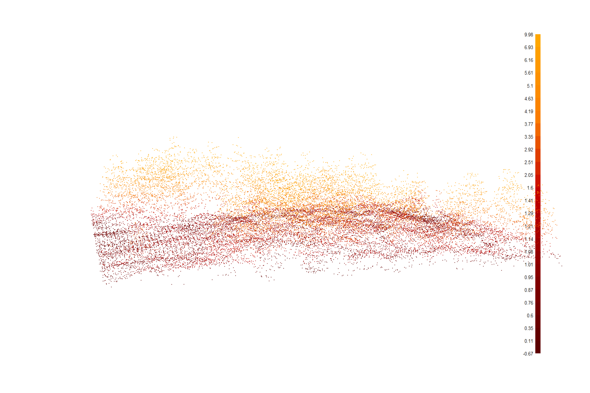
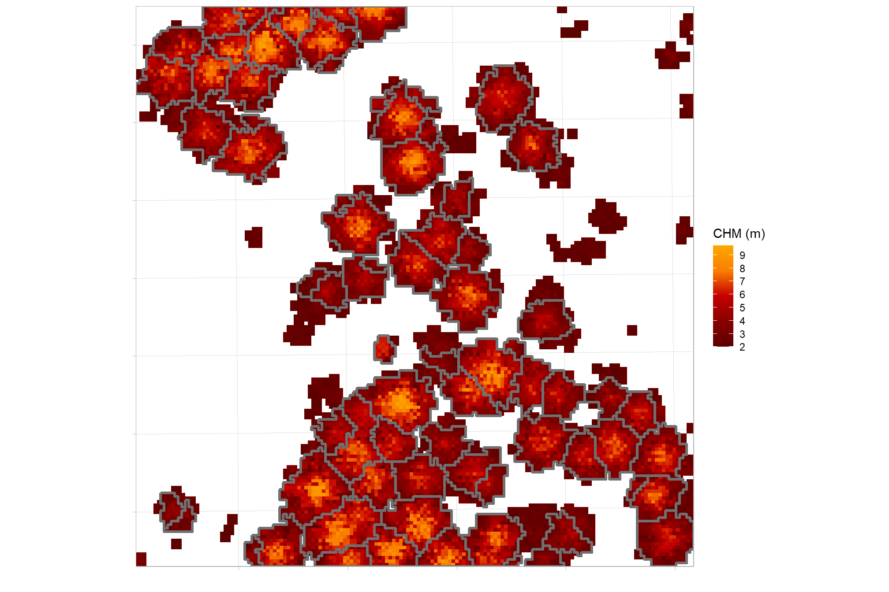
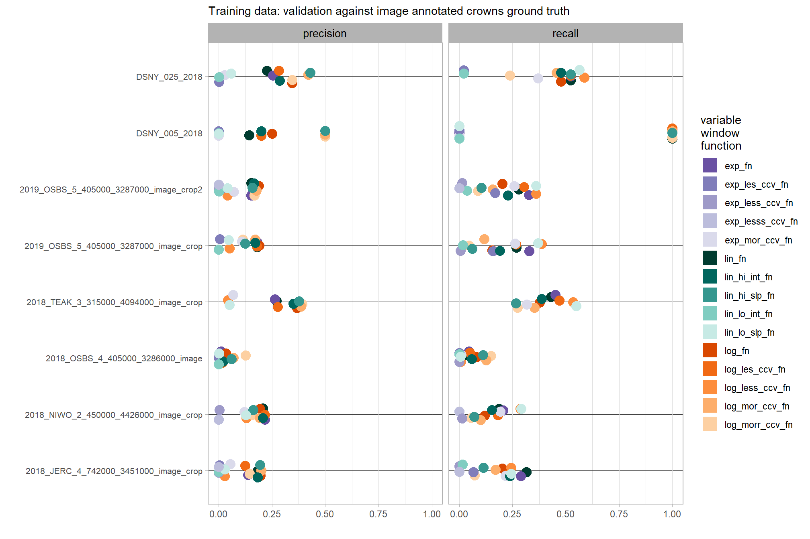
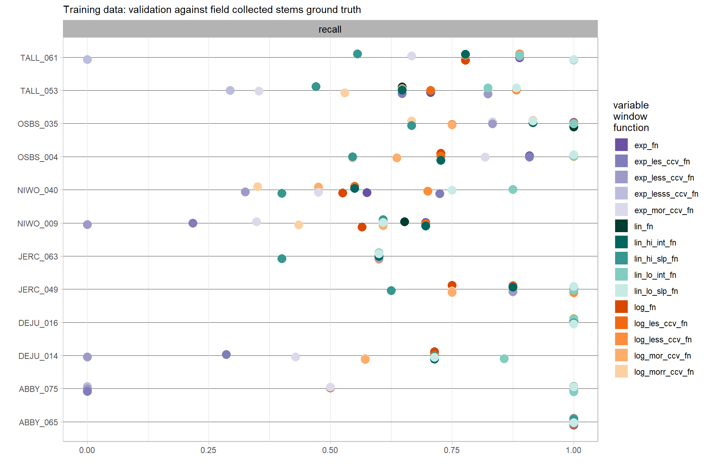
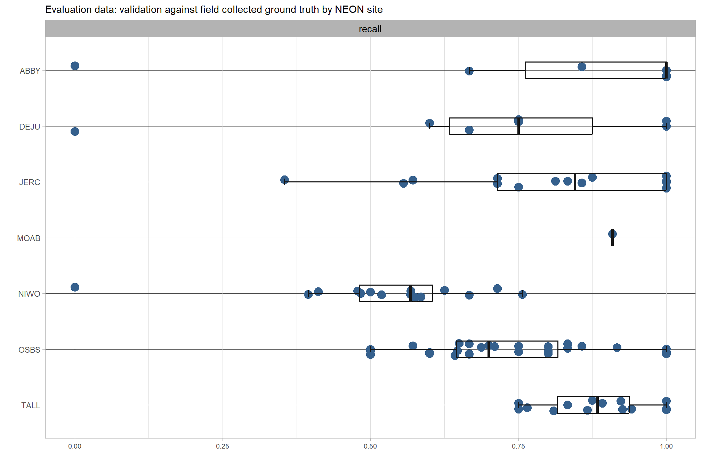

Section 4 Validate Tree Detection and Crown Delineation
In this section we’ll use the benchmark data made available in the NeonTreeEvaluation data set (Weinstein et al. 2021) to evaluate our process for lidar-based tree detection. We’ll implement our tree detection process via the cloud2trees package.
Puliti et al. (2023) also provide the benchmarking dataset “FOR-instance” for dense airborne laser scanning data. The dataset comprises five curated UAV-based laser scanning data collections from diverse global locations, representing various forest types. The data was collected over five sites in Norway, Czech Republic, Austria, Australia, and New Zealand and covers mature forests for the following forest types: boreal (42% of the number of trees) and temperate coniferous (5%), temperate mixed deciduous (29%), coniferous plantation (13%), and dry sclerophyll forests (11%). We might also consider this data for validation of our methods.
First, load the standard libraries
# bread-and-butter
library(tidyverse) # the tidyverse
library(viridis) # viridis colors
library(harrypotter) # hp colors
library(RColorBrewer) # brewer colors
library(scales) # work with number and plot scales
library(latex2exp)
# visualization
library(mapview) # interactive html maps
library(kableExtra) # tables
library(patchwork) # combine plots
library(ggnewscale) # ggnewscale
library(rgl) # rgl plotting
# spatial analysis
library(sf) # simple features
library(lidR) # lidar data
library(cloud2trees) # tha cloud2trees
library(NeonTreeEvaluation) # benchmark data4.1 NeonTreeEvaluation overview
Weinstein et al. (2021) developed:
a benchmark dataset of individual canopy crowns derived from multi-sensor imagery in the National Ecological Observatory Network (Table 1) that provides: 1) co-registered remote sensing data from multiple sensors (LiDAR, RGB imagery, and hyperspectral imagery) to allow comparisons of methods based on any single sensor (e.g., for LiDAR based methods), or any combination of sensors (e.g., combining RGB and hyperspectral), and 2) three types of evaluation data to allow assessing both ‘tree detection’, defined as the identifying the location of individual trees using evaluation data with a point at the crown center , and ‘crown delineation’ defined as identifying the boundary edge of crowns across a broad range of forest types. The benchmark is designed to allow flexibility in both workflow and sensor selection. (p. 2)
Table 1. Summary of datasets included in the benchmark dataset. All sensor data has been cropped to the extent of NEON field sampling plots.

Note the three data labeled as “Evaluation data” in the table. If you are asking “why three evaluation datasets?”, the authors provide some detail:
The inclusion of multiple evaluation types is critical because each type of evaluation data has strengths and limitations in evaluating model performance. Field collected stems are the most common evaluation data used in crown detection work due to high confidence that each stem represents a location of a single tree. However, the position of a tree stem can fail to accurately represent the position of the crown as viewed from above due to a combination of spatial errors in alignment with the image data and the tendency for trees to grow at acute angles (tree lean is not measured in the NEON data), such that the center of the crown and position of the stem can be offset by several meters….Image-annotated crowns are relatively easy to scale, allowing the collection of data for a wide range of forest types and for annotation of every visible crown in the image. Using image-annotated crowns supports the evaluation of methods across a broad range of forest types and allows both recall and precision to be calculated. However, since these annotations are not generated by an observer in the field there can be errors due to interpreting the images. This problem is solved using field-annotated crowns in which an observer annotates the remote-sensing imagery on a tablet while in the field [33]. The main limitation to this approach is that it is labor intensive, meaning that only a relatively small amount of validation data can be collected, making it difficult to obtain a large number of crowns across broad scales or assess model precision. Given the tradeoffs in each evaluation type, providing multiple criteria is a useful way of balancing the need for broad scale model verification with rigorous evaluation of field-based measurements. (p. 14-15)
To evaluate the performance of our aerial point cloud-based algorithm for 1) tree detection and 2) crown delineation using NeonTreeEvaluation we need to ensure our tree polygon data is formatted properly:
This package takes a standard submission format of predicted crowns in either bounding box or polygons as input and returns the evaluation scores of the detections for each of the three evaluation datasets. This reproducible workflow will facilitate creating a transparent process for future comparisons among crown detection algorithms. (p. 14)
The authors describe the “standard submission format” on the package GitHub:
Each row contains information for one predicted bounding box. The plot_name should be named the same as the files in the dataset without extension (e.g. SJER_021_2018 not SJER_021_2018.tif) and not the full path to the file on disk. Not all evaluation data are available for all plots. Functions like
evaluate_field_crownsandevaluate_image_crownswill look for matching plot name and ignore other plots. Depending on the speed of the algorithm, the simplest thing to do is predict all images in the RGB folder (see list_rgb()) and the package will handle matching images with the correct data to the correct evaluation procedure…Instead of bounding boxes, some methods may return polygons. To submit as polygons, create a single unprojected shapefile with polygons in image coordinates. Polygons must be complete with no holes. Here is an example of the above csv file in polygon format. Here the xmin, xmax, etc. columns are ignored since the information is stored in the geometry data.
Simple feature collection with 6 features and 7 fields
geometry type: POLYGON
dimension: XY
bbox: xmin: 30.39723 ymin: 122.1164 xmax: 397.5746 ymax: 400
CRS: NA
xmin ymin xmax ymax score label plot_name
1 41.01716 230.8854 151.08607 342.6985 0.8098674 Tree DSNY_014_2019
2 357.32129 122.1164 397.57458 159.3758 0.6968824 Tree DSNY_014_2019
3 30.39723 136.9157 73.79434 184.9473 0.5713338 Tree DSNY_014_2019
4 260.65921 285.6689 299.68811 326.7933 0.5511004 Tree DSNY_014_2019
5 179.34564 371.6130 232.49385 400.0000 0.4697072 Tree DSNY_014_2019
6 316.27377 378.9802 363.67542 400.0000 0.3259409 Tree DSNY_014_2019
st_sfc.lst.
1 POLYGON ((41.01716 230.8854...
2 POLYGON ((357.3213 122.1164...
3 POLYGON ((30.39723 136.9157...
4 POLYGON ((260.6592 285.6689...
5 POLYGON ((179.3456 371.613,...
6 POLYGON ((316.2738 378.9802...So we are going to: run cloud2trees::cloud2trees() on all of the lidar data for which there is evaluation (i.e. ground truth) data, combine into a single tree list with a row unique by a detected tree and the plot_name column (e.g. “SJER_021_2018”), as an unprojected sf data with polygons in image coordinates. We may need to run cloud2trees::simplify_multipolygon_crowns() prior to submission.
4.2 lidar data in NeonTreeEvaluation
we first have to download evaluation data from the Zenodo archive (1GB), use the NeonTreeEvaluation::download() function to place the data in the correct package location. Download the much larger training data, set training=TRUE. We are going to use the training data to determine the “best” ITD window function to use for a given NEON site since the cloud2trees package strongly recommends that “a different window size function is defined for each region of your study area with significantly different forest structure”.
Weinstein et al. (2021) describe the training data:
During our research on canopy crown detection algorithms, we annotated many geographic tiles separate from the evaluation data. The training sites were selected to capture a range of forest conditions…The training tiles were chosen at random from the NEON data portal, with the requirement that they did not contain a large amount of missing data and they did not overlap with any evaluation plots. Depending on the tree density at the site, we either annotated the entire 1 km2 tile or cropped it to a smaller size to create more tractable sizes for annotation. This data is released alongside the benchmark dataset; however, our goal is to promote the best possible crown-delineation algorithm regardless of training data, and it is not necessary to use this training data to generate predictions. Given the large size of training tiles, the training annotations were less thoroughly reviewed and were only based on the RGB imagery. (p. 11)
Note: the current version of NeonTreeEvaluation::download() does not download the training data even if setting training = T. I dug around and found the archive of the training data at https://zenodo.org/records/5914554. I’ll need to circle back with a GitHub pull request to fix the NeonTreeEvaluation::download() function so that it gets the training data which is hosted at the link mentioned previously and does not reside at where the function currently points to (https://zenodo.org/records/4770593). I also manually copied the files in “NeonTreeEvaluation/extdata/NeonTreeEvaluation/training/RGB” to “NeonTreeEvaluation/extdata/NeonTreeEvaluation/evaluation/RGB” so that evaluation could be performed. See list.dirs(system.file(package = "NeonTreeEvaluation"),recursive=T)
4.2.1 Training data
Let’s find what training data is available. We’ll use this data to determine the best window size function for use in our individual tree detection (ITD) process
# i did some digging around and the TRAINING lidar data is here
training_dir_temp <- system.file(package = "NeonTreeEvaluation", "extdata", "NeonTreeEvaluation", "training", "LiDAR")
# files
training_files_temp <- training_dir_temp %>% list.files(recursive = T, pattern = ".*\\.(laz|las)$", full.names = T) %>% unique()let’s pull out all NEON sites with point cloud data and create a data frame for tracking purposes
# let's pull out all sites with `.laz` data and create a data frame for tracking purposes
lidar_df <- training_files_temp %>%
dplyr::as_tibble() %>%
dplyr::rename(f_path = 1) %>%
# create some other variables
dplyr::mutate(
plot_name = f_path %>% basename() %>% stringr::str_remove_all("\\.(laz|las)$")
, data_type = "training"
)
# what?
lidar_df %>% dplyr::glimpse()## Rows: 16
## Columns: 3
## $ f_path <chr> "C:/Program Files/R/R-4.3.0/library/NeonTreeEvaluation/extda…
## $ plot_name <chr> "2018_BART_4_322000_4882000_image_crop", "2018_HARV_5_733000…
## $ data_type <chr> "training", "training", "training", "training", "training", …4.2.2 Evaluation data
Let’s find what evaluation data is available. We’ll use this data to evaluate our point cloud-based tree detection methodology.
# i did some digging around and the EVALUATION lidar data is here
eval_dir_temp <- system.file(package = "NeonTreeEvaluation", "extdata", "NeonTreeEvaluation", "evaluation", "LiDAR")
# files
eval_files_temp <- eval_dir_temp %>% list.files(recursive = T, pattern = ".*\\.(laz|las)$", full.names = T) %>% unique()bind the rows onto our tracking data
lidar_df <- lidar_df %>%
dplyr::bind_rows(
eval_files_temp %>%
dplyr::as_tibble() %>%
dplyr::rename(f_path = 1) %>%
# create some other variables
dplyr::mutate(
plot_name = f_path %>% basename() %>% stringr::str_remove_all("\\.(laz|las)$")
, data_type = "evaluation"
)
) %>%
dplyr::mutate(data_type = as.factor(data_type))4.2.3 Filter for ground truth data
that’s a lot of files…let’s only process the sites with evaluation data or image annotated crowns classified as training annotations
# there are functions to get a list of all evaluation data
# let's use these to filter our lidar files
plotnames_temp <- c(
NeonTreeEvaluation::list_annotations()
, NeonTreeEvaluation::list_field_stems()
# this one includes file paths, so we have to clean
, NeonTreeEvaluation::list_field_crowns() %>%
stringr::str_match(pattern="(\\w+).tif") %>%
.[,2]
# there are plot_names from the submission data too
, NeonTreeEvaluation::submission_polygons$plot_name %>% unique()
, NeonTreeEvaluation::submission$plot_name %>% unique()
# make sure we have all image annotated crowns
, system.file(package = "NeonTreeEvaluation", "extdata", "NeonTreeEvaluation", "annotations") %>%
list.files() %>%
basename() %>%
stringr::str_remove_all("\\.(xml)$") %>%
unique()
) %>%
unique()
# huh?
# plotnames_temp %>% sample(11) %>% sort()The field collected stem validation data will take a bit more to get the actual plots for which there is validation data. We have to pull clean_field_data() from NeonTreeEvaluation as an internal function which is used to filter NeonTreeEvaluation::field…we’ll than match other filters used in NeonTreeEvaluation::evaluate_field_stems()
# this is an internal function from `NeonTreeEvaluation::evaluate_field_stems()`
clean_field_data<-function(field){
field$area<-field$maxCrownDiameter*field$ninetyCrownDiameter
field<-field %>% filter(!is.na(itcEasting),!stringr::str_detect(eventID,"2014"),growthForm %in% c("single bole tree","multi-bole tree","small tree","sapling"),stemDiameter>15) %>%
droplevels() %>%
filter(height>3|is.na(height))
#Limit difference in heights
to_remove<-field %>% group_by(individualID) %>%
summarize(mean=mean(height),sum_difference = abs(sum(diff(height)))) %>%
filter(sum_difference > 8)
field<-field %>%
filter(!individualID %in% to_remove$individualID)
}
# apply all the filters for field collected stems used in `NeonTreeEvaluation::evaluate_field_stems()`
field_plots_temp <- NeonTreeEvaluation::field %>%
clean_field_data() %>%
dplyr::filter(height>3) %>%
dplyr::group_by(plotID,individualID) %>%
dplyr::summarize(samples=length(unique(eventID))) %>%
dplyr::filter(samples>1) %>%
dplyr::ungroup() %>%
dplyr::mutate(plotID=as.character(plotID)) %>%
dplyr::pull(plotID) %>%
unique()
# `NeonTreeEvaluation::evaluate_field_stems()` also requires rgb and chm data
chm_temp <- NeonTreeEvaluation::list_chm() %>%
basename() %>%
stringr::str_match("(\\w+)_\\d+") %>%
.[,2] %>%
unique()
field_plots_temp <- field_plots_temp[field_plots_temp %in% chm_temp]
rgb_temp <- NeonTreeEvaluation::list_rgb() %>%
basename() %>%
stringr::str_match("(\\w+)_\\d+") %>%
.[,2] %>%
unique()
field_plots_temp <- field_plots_temp[field_plots_temp %in% rgb_temp]filter our lidar data list to keep only point clouds in plots for which there is validation data
lidar_df <-
lidar_df %>%
#filter based on plots in evaluation data
dplyr::filter(plot_name %in% plotnames_temp) %>%
# filter for field plots
# pull out site
dplyr::mutate(
plot_temp = stringr::str_extract(
string = plot_name
, pattern = field_plots_temp %>%
unique() %>%
toupper() %>%
paste(collapse = "|")
)
) %>%
# flag the data with image annotated crowns or field stems which we'll use to train our ws fn
# if this doesn't make sense yet, keep reading down
dplyr::mutate(
has_image_annotation = plot_name %in% NeonTreeEvaluation::list_annotations()
, has_field_stems = !is.na(plot_temp)
) %>%
# keep only those with field stems or image annotated crowns
dplyr::filter(has_image_annotation | has_field_stems) %>%
dplyr::select(-c(plot_temp))We need to put the NEON site identifier in our data. We’ll use the field-collected tree data from NEON sites made available which will also serve to filter our point cloud list for forested NEON sites only.
# get a list of siteID
neon_sites_temp <-
NeonTreeEvaluation::field %>%
sf::st_drop_geometry() %>%
dplyr::distinct(siteID) %>%
# there are siteID's here too
dplyr::bind_rows(
NeonTreeEvaluation::crown_polygons %>%
sf::st_drop_geometry() %>%
dplyr::distinct(siteID)
) %>%
dplyr::mutate(siteID = as.character(siteID)) %>%
dplyr::distinct(siteID) %>%
dplyr::pull(siteID)
# extract the siteID from the plot_name
lidar_df <- lidar_df %>%
# pull out site
dplyr::mutate(
siteID = stringr::str_extract(
string = plot_name
, pattern = neon_sites_temp %>%
unique() %>%
toupper() %>%
paste(collapse = "|")
)
) %>%
dplyr::filter(!is.na(siteID))what is the breakdown of training vs eval?
## # A tibble: 2 × 2
## data_type n
## <fct> <int>
## 1 evaluation 522
## 2 training 154.2.4 Filter for conifer sites
we will want to limit our evaluation to only sites with conifer trees since cloud2trees implements methods developed specifically to quantify conifer forest structure that may not be appropriate for other forest types
we’ll use the field data in the package to look for NEON sites with conifer trees. We’ll use the NEON plant list to identify conifer species: https://data.neonscience.org/taxonomic-lists?taxonTypeCode=PLANT (click “DOWNLOAD TAXONOMIC LIST”). We’ll filter for species belonging to Class Pinopsida.
conifer_spp <-
readr::read_csv(
"../data/OS_TAXON_PLANT-20220330T142149.csv"
, show_col_types = F
, progress = F
) %>%
dplyr::filter(
tolower(`class`) %in% c("pinopsida")
) %>%
dplyr::mutate(
taxonID = toupper(taxonID)
, vernacularName = tolower(vernacularName)
, genus = stringr::str_to_title(genus)
) %>%
dplyr::distinct(taxonID, vernacularName, genus)what are some of these conifers?
# huh?
conifer_spp %>%
dplyr::slice_sample(n = 10) %>%
kableExtra::kbl(caption = "Conifer species taxonID examples") %>%
kableExtra::kable_styling()| taxonID | vernacularName | genus |
|---|---|---|
| PIEN2 | apache pine | Pinus |
| HESPE5 | western cypress | Hesperocyparis |
| TSJE | hybrid hemlock | Tsuga |
| THPL | western redcedar | Thuja |
| PILA | sugar pine | Pinus |
| ABCO | white fir | Abies |
| PIHA7 | aleppo pine | Pinus |
| PIPI7 | italian stone pine | Pinus |
| HEPI11 | pygmy cypress | Hesperocyparis |
| HESA17 | sargent’s cypress | Hesperocyparis |
filter for NEON sites that have conifer trees based on field data from all terrestrial NEON sites with qualifying woody vegetation: https://data.neonscience.org/data-products/DP1.10098.001
conifer_sites <- NeonTreeEvaluation::field %>%
dplyr::left_join(
conifer_spp %>% dplyr::mutate(is_conifer = 1)
, by = "taxonID"
) %>%
dplyr::mutate(is_conifer = dplyr::coalesce(is_conifer, 0)) %>%
dplyr::group_by(siteID) %>%
dplyr::summarise(
tot = dplyr::n()
, conifer = sum(is_conifer)
, latitude = mean(plotLatitude)
, longitude = mean(plotLongitude)
) %>%
dplyr::ungroup() %>%
dplyr::mutate(pct_conifer = conifer/tot)what is the breakdown of woody vegetation sampled in NEON sites by the percent conifer?
conifer_sites %>%
dplyr::select(-c(longitude,latitude)) %>%
dplyr::arrange(desc(pct_conifer), desc(tot)) %>%
dplyr::slice_head(n = 19) %>%
kableExtra::kbl(
caption = "Conifers in NEON sites"
, digits = 2
, col.names = c(
"site","total trees","conifer trees", "% conifer"
)
) %>%
kableExtra::kable_styling()| site | total trees | conifer trees | % conifer |
|---|---|---|---|
| NIWO | 1804 | 1804 | 1.00 |
| ONAQ | 88 | 88 | 1.00 |
| MOAB | 29 | 29 | 1.00 |
| HEAL | 21 | 21 | 1.00 |
| YELL | 13 | 13 | 1.00 |
| TEAK | 621 | 619 | 1.00 |
| DEJU | 173 | 169 | 0.98 |
| ABBY | 268 | 241 | 0.90 |
| RMNP | 1375 | 1083 | 0.79 |
| SOAP | 503 | 389 | 0.77 |
| DSNY | 34 | 26 | 0.76 |
| TALL | 2144 | 1521 | 0.71 |
| OSBS | 1288 | 858 | 0.67 |
| JERC | 562 | 336 | 0.60 |
| HARV | 3736 | 1701 | 0.46 |
| TREE | 1303 | 430 | 0.33 |
| BART | 3636 | 1022 | 0.28 |
| BONA | 188 | 48 | 0.26 |
| STEI | 754 | 151 | 0.20 |
let’s only keep NEON sites with a minimum threshold of the woody vegetation sampled as conifer
now join on our proportion of conifer by NEON site to our lidar data list
lidar_df <- lidar_df %>%
dplyr::left_join(conifer_sites, by = "siteID") %>%
sf::st_as_sf(coords = c("longitude","latitude"), crs = 4326, remove = F)before we filter for conifer sites only, let’s check which sites we have lidar data from and whether or not they are classified as a conifer site based on this threshold of 50%
lidar_df %>%
dplyr::group_by(siteID) %>%
dplyr::summarise(pct_conifer = dplyr::first(pct_conifer)) %>%
dplyr::mutate(
is_conifer_site = pct_conifer>min_conifer_pct
, pct_conifer = scales::percent(pct_conifer,accuracy=0.1)
) %>%
mapview::mapview(
zcol = "is_conifer_site", legend = T
, layer.name = "conifer site?"
, col.regions = viridis::viridis(n=2,begin = 0.3,end = 0.7)
)looks reasonable, let’s filter our point cloud processing data for conifer sites based on our proportional threshold of 50%
# data frame of sites
lidar_df <- lidar_df %>%
dplyr::filter(pct_conifer>min_conifer_pct) %>%
# filter out corrupt las files
# these don't load in lasR...maybe extrabytes issue???
dplyr::filter(
!plot_name %in% c(
"NIWO_005_2018"
, "SOAP_014_2018"
, "MOAB_003_2018"
, "NIWO_009_2018"
, "TEAK_028_2018"
, "YELL_058_2020"
, "RMNP_011_2018"
, "YELL_030_2018"
, "YELL_051_2019"
, "SOAP_014_2019"
, "TEAK_005_2018"
, "DSNY_019_2019"
, "HEAL_004_2019"
, "SOAP_049_2018"
, "TEAK_016_2019"
, "YELL_006_2018"
)
) %>%
dplyr::mutate(
# these plots not corrupt but there are no field trees to evaluate against
has_field_stems = dplyr::case_when(
plot_name %in% c(
"DEJU_021_2018"
, "DEJU_021_2019"
, "JERC_055_2018"
, "JERC_055_2019"
, "ABBY_064_2018"
, "ABBY_064_2019"
) ~ F
, T ~ has_field_stems
)
) %>%
dplyr::filter(
data_type == "training" | has_field_stems | has_image_annotation
)what NEON sites have conifers and training/evaluation data?
lidar_df %>%
sf::st_drop_geometry() %>%
dplyr::group_by(siteID) %>%
dplyr::summarise(
n = dplyr::n()
, training_plots = sum(ifelse(data_type=="training",1,0))
, evaluation_plots = sum(ifelse(data_type=="evaluation",1,0))
, evaluation_ann_plots = sum(ifelse(has_image_annotation & data_type=="evaluation",1,0))
, evaluation_fld_plots = sum(ifelse(has_field_stems & data_type=="evaluation",1,0))
) %>%
dplyr::arrange(desc(n)) %>%
dplyr::select(-n) %>%
kableExtra::kbl(
caption = "NEON sites with conifers and lidar plots"
, col.names = c(
"site","training plots","evaluation plots"
,"evaluation plots<br>with ground truth<br>image ann. crowns"
,"evaluation plots<br>with ground truth<br>field collected stems"
)
, escape = F
) %>%
kableExtra::kable_styling()| site | training plots | evaluation plots |
evaluation plots with ground truth image ann. crowns |
evaluation plots with ground truth field collected stems |
|---|---|---|---|---|
| OSBS | 3 | 49 | 14 | 46 |
| TEAK | 1 | 51 | 51 | 0 |
| NIWO | 1 | 42 | 10 | 41 |
| JERC | 1 | 22 | 6 | 21 |
| TALL | 0 | 23 | 2 | 22 |
| ABBY | 0 | 14 | 2 | 13 |
| DEJU | 0 | 14 | 0 | 14 |
| DSNY | 0 | 6 | 6 | 0 |
| MOAB | 0 | 2 | 0 | 2 |
| SOAP | 0 | 2 | 2 | 0 |
| ONAQ | 0 | 1 | 1 | 0 |
note that the sum of the evaluation plots with image annotated crowns and with field collected stems does not necessarily equate to the number of evaluation plots since one plot can have both image annotated and field collected data.
what is the spatial distribution of these conifer sites for which lidar data is available?
lidar_df %>%
dplyr::group_by(siteID) %>%
dplyr::summarise(
training_plots = sum(ifelse(data_type=="training",1,0))
, evaluation_plots = sum(ifelse(data_type=="evaluation",1,0))
) %>%
dplyr::ungroup() %>%
dplyr::mutate(
data_type = dplyr::case_when(
training_plots>0 & evaluation_plots==0 ~ "training"
, training_plots>0 & evaluation_plots>0 ~ "training+evaluation"
, training_plots==0 & evaluation_plots>0 ~ "evaluation"
, T ~ "other"
)
) %>%
mapview::mapview(
zcol = "data_type", legend = T
, layer.name = "data type"
, col.regions = viridis::magma(n=2,begin = 0.2,end = 0.8)
)4.2.5 Augment training data
While the map above shows that the training and evaluation data are in places that we expect to have conifers, the spatial coverage of training data is limited. This is especially true when one considers that even NEON sites that are close in proximity can have very different forest types. For example, the “TEAK” site east of Fresno, CA has both training and evaluation data and features vegetation described as “dominant tree species include red and white fir (Abies magnifica and Abies concolor), Jeffrey pine (Pinus jeffreyi), and lodgepole pine (Pinus contorta)” (source). While the “SOAP” site that is close in proximity and lacks training data has vegetation described as “Ponderosa pine (Pinus ponderosa) and incense cedar (Calocedrus decurrens) dominate the overstory” (source).
We will augment the training data by NEON site to validate against the image annotated crown ground truth using NeonTreeEvaluation::evaluate_image_crowns() by:
- if a site has image annotated crowns marked as training data, use those plots
- otherwise, if a site has at least 5 image annotated crown evaluation data sets borrow two plots to validate against
- otherwise, if a site has at least 4 image annotated crown evaluation data sets borrow one plot to validate against
We will augment the training data by NEON site to validate against the field collected stems ground truth using NeonTreeEvaluation::evaluate_field_stems() by:
- if a site has at least 5 field collected stem validation data sets, borrow two plots to validate against even if the site has image annotated crowns marked as out-of-box training data
- otherwise, if a site has at least 4 field collected stem evaluation data sets, borrow one plot to validate against
We will then use the results of the validation based on the training data to select the best variable window search function based on the precision and recall metrics by NEON site. If a NEON site does not have training data the best overall variable window function will be used.
# set seed to replicate results
set.seed(444)
# randomly assign plots as training:
lidar_df <-
lidar_df %>%
dplyr::ungroup() %>%
# generate rand
dplyr::mutate(rand = runif(n=dplyr::n())) %>%
# count training/eval by site and flag new training
dplyr::group_by(siteID) %>%
dplyr::mutate(
training_plots = sum(ifelse(data_type=="training",1,0))
, evaluation_ann_plots = sum(ifelse(has_image_annotation & data_type=="evaluation",1,0))
, evaluation_fld_plots = sum(ifelse(has_field_stems & data_type=="evaluation",1,0))
) %>%
# sample img annotated data
dplyr::arrange(siteID, has_image_annotation, rand) %>%
dplyr::group_by(siteID,has_image_annotation) %>%
dplyr::mutate(
is_new_image_annotation_training = dplyr::case_when(
training_plots == 0 &
evaluation_ann_plots>=5 &
has_image_annotation == T &
dplyr::row_number()<=2 ~ T
, training_plots == 0 &
evaluation_ann_plots>=4 &
has_image_annotation == T &
dplyr::row_number()<=1 ~ T
, T ~ F
)
) %>%
# sample fld stems data
dplyr::arrange(siteID, has_field_stems, rand) %>%
dplyr::group_by(siteID,has_field_stems) %>%
dplyr::mutate(
is_new_field_stems_training = dplyr::case_when(
evaluation_fld_plots>=5 &
has_field_stems == T &
dplyr::row_number()<=2 ~ T
, evaluation_fld_plots>=4 &
has_field_stems == T &
dplyr::row_number()<=1 ~ T
, T ~ F
)
) %>%
dplyr::ungroup() %>%
dplyr::select(-c(rand,tot,conifer,tidyselect::ends_with("_plots")))check our new table of training/evaluation data by NEON site after we augmented the training data
lidar_df %>%
sf::st_drop_geometry() %>%
dplyr::group_by(siteID) %>%
dplyr::summarise(
n = dplyr::n()
, training_plots = sum(ifelse(data_type=="training",1,0))
# validation type
, ann_plots = sum(ifelse(has_image_annotation,1,0))
, fld_plots = sum(ifelse(has_field_stems,1,0))
# training/eval
, training_ann_plots = sum(ifelse(has_image_annotation & (is_new_image_annotation_training | data_type=="training"),1,0))
, training_fld_plots = sum(ifelse(has_field_stems & (is_new_field_stems_training | data_type=="training"),1,0))
) %>%
dplyr::ungroup() %>%
dplyr::mutate(
# training/eval
eval_ann_plots = ann_plots-training_ann_plots
, eval_fld_plots = fld_plots-training_fld_plots
) %>%
dplyr::arrange(desc(n)) %>%
dplyr::select(-c(n,ann_plots,fld_plots)) %>%
dplyr::relocate(
c(tidyselect::ends_with("ann_plots"),tidyselect::ends_with("fld_plots"))
,.after = dplyr::last_col()
) %>%
kableExtra::kbl(
caption = "NEON sites with conifers and lidar plots using augmented training data"
, col.names = c(
"site","original<br>training plots"
,"training plots","evaluation plots"
,"training plots","evaluation plots"
)
, escape = F
) %>%
kableExtra::kable_styling() %>%
kableExtra::add_header_above(
c(" "=2, "image annotated crowns" = 2, "field collected stems" = 2)
)| site |
original training plots |
training plots | evaluation plots | training plots | evaluation plots |
|---|---|---|---|---|---|
| OSBS | 3 | 3 | 14 | 2 | 44 |
| TEAK | 1 | 1 | 51 | 0 | 0 |
| NIWO | 1 | 1 | 10 | 2 | 39 |
| JERC | 1 | 1 | 6 | 2 | 19 |
| TALL | 0 | 0 | 2 | 2 | 20 |
| ABBY | 0 | 0 | 2 | 2 | 11 |
| DEJU | 0 | 0 | 0 | 2 | 12 |
| DSNY | 0 | 2 | 4 | 0 | 0 |
| MOAB | 0 | 0 | 0 | 0 | 2 |
| SOAP | 0 | 0 | 2 | 0 | 0 |
| ONAQ | 0 | 0 | 1 | 0 | 0 |
4.3 Height threshold for “canopy” trees
We’ll process the point cloud and get a tree list using our cloud2trees::cloud2trees() method with all default settings except for the ITD window function (see section below). However, an important consideration in the evaluation of our method is that the Weinstein et al. 2021 benchmark was developed specifically for “canopy” trees and the field-collected stems evaluation data only includes >10 cm DBH trees:
NEON field crews sample all trees within a plot that are greater than 10cm DBH, regardless of whether the tree crown can be seen in the remote sensing image data. While understory tree detection is an important area of future work, the scope of this benchmark is focused on crowns in the canopy that are visible from above. (p. 10)
In order to align our point cloud-based algorithm with the evaluation data inclusion of only “canopy” trees, we’ll identify the shortest live tree in the field-collected stems evaluation data by NEON site. We’ll use this value to filter our cloud2trees::cloud2trees() tree list in post-processing. This filtering process is analogous to setting a diameter threshold during a forest inventory (e.g. >10 cm DBH), meaning only trees with a DBH of 10 cm, for example, or greater are tallied and measured which a common practice because it focuses on trees that are potentially merchantable.
In working with the NeonTreeEvaluation::field data we’ll use the filters found in clean_field_data() from NeonTreeEvaluation as an internal function
# set the percentile to determine the shortest live tree in the field-collected stems evaluation data
# using a percentile helps to avoid outlier measurements that might occur if we used a minimum value
percentile_for_ht <- 0.05
# get non-na heights from neon field measured trees
neon_field_heights <-
NeonTreeEvaluation::field %>%
# filters found in `clean_field_data()`
clean_field_data() %>%
dplyr::filter(!is.na(height) & height>3) %>%
# and finally, filter for our conifer sites only
dplyr::inner_join(
conifer_sites %>%
dplyr::filter(pct_conifer>min_conifer_pct)
)
# get 5th tile ht by site
neon_site_heights <-
neon_field_heights %>%
dplyr::group_by(siteID) %>%
dplyr::summarise(
site_prcntl_ht = quantile(floor(height), probs = percentile_for_ht, na.rm = T)
) %>%
dplyr::ungroup()look at the summary of height data across all sites and plots
## Min. 1st Qu. Median Mean 3rd Qu. Max.
## 3.10 9.60 12.80 13.72 16.40 53.90what does this look like for each NEON site?
neon_field_heights %>%
dplyr::inner_join(neon_site_heights, by = "siteID") %>%
ggplot2::ggplot(ggplot2::aes(x = height, group = siteID)) +
ggplot2::geom_density(color = "gold",fill = "gold", alpha = 0.7, lwd = 1.2) +
ggplot2::geom_vline(aes(xintercept = site_prcntl_ht), linetype = "dashed") +
ggplot2::facet_wrap(facets = vars(siteID), ncol = 6, scales = "free") +
ggplot2::scale_x_continuous(breaks = scales::breaks_extended(6)) +
ggplot2::labs(
x = "height (m)", y = ""
, subtitle = paste0(
"field-collected heights of \"canopy\" trees in conifer NEON sites with "
, scales::number(percentile_for_ht*100, accuracy = 1)
, "th percentile by site"
)
) +
ggplot2::theme_light() +
ggplot2::theme(
axis.text.y = ggplot2::element_blank()
, axis.ticks.y = ggplot2::element_blank()
, strip.text = ggplot2::element_text(color = "black", size = 10)
)
what is the overall 5th percentile to use for minimum height?
## 5%
## 5let’s attach this to our data frame of lidar data files
lidar_df <- lidar_df %>%
dplyr::left_join(neon_site_heights, by = "siteID") %>%
dplyr::mutate(
site_prcntl_ht = dplyr::coalesce(site_prcntl_ht,neon_min_ht)
, plot_name_sans_yr = dplyr::case_when(
data_type == "training" ~ NA
, T ~ stringr::str_match(plot_name,"(\\w+)_\\d+")[,2]
)
)
# dplyr::glimpse(lidar_df)
# save
readr::write_csv(lidar_df, "../data/NeonTreeEvaluation_lidar_df.csv", append = F, progress = F)4.4 Example validation process
now that we have our lidar data and post-processing height filter that we can test our point cloud-based tree detection and crown segmentation process against, let’s walk through the validation for a single point cloud
we’ll test with a single evaluation point cloud
lidar_df_row <- lidar_df %>%
sf::st_drop_geometry() %>%
dplyr::mutate(
rn = ifelse(
data_type=="evaluation" & has_image_annotation & has_field_stems
,dplyr::row_number()
,NA
)) %>%
dplyr::filter(!is.na(rn)) %>%
dplyr::slice(1) %>%
dplyr::pull(rn)
# lidar_df$f_path[lidar_df_row] %>% lidR::readLAS() %>% lidR::st_crs()4.4.1 Preliminaries
4.4.1.1 View the point cloud
This step isn’t necessary for validation, but let’s see what this point cloud data looks like. We can plot the point cloud with and color by the point height
lidar_df$f_path[lidar_df_row] %>%
lidR::readLAS() %>%
lidR::plot(
color = "Z", breaks = "quantile", bg = "white", legend = T
, pal = harrypotter::hp(n=50, house = "gryffindor")
)
there are trees in there for sure (and conifer trees by the looks of it)
let’s look at the RGB imagery and image annotated crowns (notice that the NeonTreeEvaluation commands rely on the deprecated raster package :/ )
# read rgb
rgb_temp <- lidar_df$plot_name[lidar_df_row] %>%
NeonTreeEvaluation::get_data(type = "rgb") %>%
raster::stack()
# read image annotated crown data and make polygons
polys_temp <-
lidar_df$plot_name[lidar_df_row] %>%
NeonTreeEvaluation::get_data(type = "annotations") %>%
NeonTreeEvaluation::xml_parse()
polys_temp <- NeonTreeEvaluation::boxes_to_spatial_polygons(polys_temp,rgb_temp)
# plot
terra::plotRGB(rgb_temp %>% terra::rast())
terra::plot(
polys_temp %>% terra::vect()
, col = NA, border = "red"
, lwd = 2 , add = TRUE
)
4.4.2 cloud2trees::cloud2trees()
for our example, we’ll use all default settings in cloud2trees::cloud2trees() to get a point cloud-detected tree list
ans <- cloud2trees::cloud2trees(
input_las_dir = lidar_df$f_path[lidar_df_row]
, output_dir = tempdir()
)
# filter the tree list based on the height threshold
ans$crowns_sf <- ans$crowns_sf %>%
dplyr::filter(tree_height_m >= lidar_df$site_prcntl_ht[lidar_df_row])quick check of our heights
## Min. 1st Qu. Median Mean 3rd Qu. Max.
## 4.068 5.632 7.182 6.943 8.411 9.7064.4.3 Format extracted tree polygons
we need to format our extracted trees for NeonTreeEvaluation evaluation and submission
first, we’ll simplify multipolygon crowns
check out our extracted trees
ggplot2::ggplot() +
ggplot2::geom_tile(
data = ans$chm_rast %>%
terra::as.data.frame(xy=T) %>%
dplyr::rename(f=3)
, mapping = ggplot2::aes(x = x, y = y, fill = f)
, na.rm = T
) +
harrypotter::scale_fill_hp(
option = "gryffindor"
, breaks = scales::breaks_extended(n=10)
) +
ggplot2::geom_sf(
data = ans$crowns_sf
, fill = NA, color = "gray44", lwd = 1.2
) +
ggplot2::scale_x_continuous(expand = c(0, 0)) +
ggplot2::scale_y_continuous(expand = c(0, 0)) +
ggplot2::labs(x = "", y = "", fill = "CHM (m)") +
ggplot2::theme_light() +
ggplot2::theme(axis.text = ggplot2::element_blank())
we’ll reserve judgement and let the data talk
format the data for NeonTreeEvaluation submission and evaluation
return_sf <-
ans$crowns_sf %>%
sf::st_set_geometry("geometry") %>%
dplyr::rowwise("treeID") %>%
dplyr::mutate(
xmin = sf::st_bbox(geometry)[1]
, ymin = sf::st_bbox(geometry)[2]
, xmax = sf::st_bbox(geometry)[3]
, ymax = sf::st_bbox(geometry)[4]
) %>%
dplyr::ungroup() %>%
dplyr::mutate(
label = "Tree"
, plot_name = lidar_df$plot_name[lidar_df_row]
) %>%
dplyr::select(xmin,xmax,ymin,ymax,label,plot_name) %>%
sf::st_set_crs(NA)
# what?
return_sf %>% dplyr::glimpse()## Rows: 74
## Columns: 7
## $ xmin <dbl> 552095.5, 552089.8, 552081.2, 552085.2, 552084.2, 552080.2, …
## $ xmax <dbl> 552099.5, 552093.0, 552085.2, 552088.2, 552087.2, 552084.5, …
## $ ymin <dbl> 5067679, 5067678, 5067677, 5067677, 5067674, 5067674, 506767…
## $ ymax <dbl> 5067681, 5067681, 5067680, 5067679, 5067679, 5067678, 506767…
## $ label <chr> "Tree", "Tree", "Tree", "Tree", "Tree", "Tree", "Tree", "Tre…
## $ plot_name <chr> "ABBY_063_2019", "ABBY_063_2019", "ABBY_063_2019", "ABBY_063…
## $ geometry <POLYGON> POLYGON ((552095.8 5067681,..., POLYGON ((552090.8 50676…does this match the submission polygon data from the NeonTreeEvaluation package?
## Rows: 126,574
## Columns: 8
## $ xmin <dbl> 41.01716, 357.32129, 30.39723, 260.65921, 179.34564, 316.2…
## $ ymin <dbl> 230.8854218, 122.1164017, 136.9156647, 285.6688843, 371.61…
## $ xmax <dbl> 151.08607, 397.57458, 73.79434, 299.68811, 232.49385, 363.…
## $ ymax <dbl> 342.69846, 159.37578, 184.94730, 326.79330, 400.00000, 400…
## $ score <dbl> 0.8098674, 0.6968824, 0.5713338, 0.5511004, 0.4697072, 0.3…
## $ label <chr> "Tree", "Tree", "Tree", "Tree", "Tree", "Tree", "Tree", "T…
## $ plot_name <chr> "DSNY_014_2019", "DSNY_014_2019", "DSNY_014_2019", "DSNY_0…
## $ st_sfc.lst. <POLYGON> POLYGON ((41.01716 230.8854..., POLYGON ((357.3213 122…yes, except for the “score” column which I’m pretty sure is an artifact from after evaluation?
4.4.4 Test evaluation
We compared our tree detection and crown delineation results to the three types of evaluation data (i.e. “ground truth” data) presented by Weinstein et al. (2021): field-collected stems, image-annotated crowns, and field-annotated crowns. Field-collected stems offer precise tree locations but might not align with the position of the tree crown as viewed from above (e.g. due to tree lean), image-annotated crowns outline crown boundaries but are subjective, and field-annotated crowns combine the benefits of both but are highly resource-intensive.
4.4.4.1 Scores for image-annotated crowns
The main data source are image-annotated crowns, in which a single observer annotated visible trees in 200 40m x 40m images from across the United States. Get the benchmark score image-annotated “ground truth” data.
in testing, including the sf polygon data did not work…switching to the bbox method with sf::st_drop_geometry()
rslt_img_annttd_crwns <- NeonTreeEvaluation::evaluate_image_crowns(
predictions = return_sf %>% sf::st_drop_geometry()
, show = T
, summarize = T
)## [1] "ABBY_063_2019"
in the plot (if there is a plot), “red” boxes are crowns our point cloud-based method extracted and “black” are the image annotated crowns
it looks like the overlay is generally the same but we are still extracting trees that may not be considered “canopy” trees ;
what is in the return from NeonTreeEvaluation::evaluate_image_crowns() ?
## [1] "overall" "by_site" "plot_level" "count_error"overall: must be across all NEON sites, plots, and trees included for evaluation
## # A tibble: 1 × 2
## precision recall
## <dbl> <dbl>
## 1 0.554 0.719by_site: must be across plots, and trees included for evaluation in a NEON sites
## # A tibble: 1 × 3
## # Groups: Site [1]
## Site recall precision
## <chr> <dbl> <dbl>
## 1 ABBY 0.719 0.554plot_level: must be across trees included for evaluation in a NEON site, plot combination
## # A tibble: 1 × 3
## # Groups: plot_name [1]
## plot_name recall precision
## <chr> <dbl> <dbl>
## 1 ABBY_063_2019 0.719 0.554count_error is the number of predicted trees minus the number of “ground truth” trees but in graphical form so we’ll skip it
4.4.4.2 Scores for field-annotated crowns
The second data source is a small number of field-annotated crowns from two geographic sites. These crowns were drawn on a tablet while physically standing in the field, thereby reducing the uncertainty in crown segmentation.
not all plots have field-annotated crowns
NeonTreeEvaluation::evaluate_field_crowns() returns an error if “No plot names matching the field crown data, see list_field_crowns for paths to RGB field crown imagery.”… so, we’ll have to capture errors in our checks?
# safe it
safe_evaluate_field_crowns <- purrr::safely(NeonTreeEvaluation::evaluate_field_crowns)
# test it
rslt_fld_crwns <- safe_evaluate_field_crowns(
predictions = return_sf %>% sf::st_drop_geometry()
, show = T
, summarize = T
)did it do it?
## <simpleError in .f(...): No plot names matching the field crown data, see list_field_crowns for paths to RGB field crown imagery.>nope!
4.4.4.3 Scores for field-collected stems
The third data source is the NEON Woody Vegetation Structure Dataset. Each tree stem is represented by a single point. This data has been filtered to represent overstory trees visible in the remote sensing imagery.
not all plots have field-collected stems
NeonTreeEvaluation::evaluate_field_stems() returns an error if “No submitted plot_names with matching field stem data, see list_field_stems()”… so, we’ll have to capture errors in our checks?
# safe it
safe_evaluate_field_stems <- purrr::safely(NeonTreeEvaluation::evaluate_field_stems)
# test it
rslt_fld_stems <- safe_evaluate_field_stems(
predictions = return_sf %>% sf::st_drop_geometry()
, show = T
, summarize = T
)## [1] "ABBY_063"did it do it?
## <error/rlang_error>
## Error in `summarize()`:
## ℹ In argument: `recall = mean(recall)`.
## Caused by error:
## ! object 'recall' not found
## ---
## Backtrace:
## ▆
## 1. ├─purrr (local) safe_evaluate_field_stems(...)
## 2. │ ├─purrr:::capture_error(.f(...), otherwise, quiet)
## 3. │ │ └─base::tryCatch(...)
## 4. │ │ └─base (local) tryCatchList(expr, classes, parentenv, handlers)
## 5. │ │ └─base (local) tryCatchOne(expr, names, parentenv, handlers[[1L]])
## 6. │ │ └─base (local) doTryCatch(return(expr), name, parentenv, handler)
## 7. │ └─NeonTreeEvaluation (local) .f(...)
## 8. │ └─results %>% summarize(recall = mean(recall))
## 9. ├─dplyr::summarize(., recall = mean(recall))
## 10. ├─dplyr:::summarise.data.frame(., recall = mean(recall))
## 11. │ └─dplyr:::summarise_cols(.data, dplyr_quosures(...), by, "summarise")
## 12. │ ├─base::withCallingHandlers(...)
## 13. │ └─dplyr:::map(quosures, summarise_eval_one, mask = mask)
## 14. │ └─base::lapply(.x, .f, ...)
## 15. │ └─dplyr (local) FUN(X[[i]], ...)
## 16. │ └─mask$eval_all_summarise(quo)
## 17. │ └─dplyr (local) eval()
## 18. └─base::mean(recall)nope!
4.5 ITD tuning
Before we perform tree extraction on the evaluation data we’ll use the training data to tune our process for lidar-based tree detection implemented via the [cloud2trees]https://github.com/georgewoolsey/cloud2trees) package. Specifically, we are going to use the training data to determine the “best” ITD window function to use for a given NEON site since the cloud2trees package strongly recommends that “a different window size function is defined for each region of your study area with significantly different forest structure”. See the lidR package book section by point cloud processing expert Jean-Romain Roussel for excellent detail on ITD and defining window size.
4.5.1 Default variable window functions
We discussed our method for individual tree detection (ITD) in this prior section. For the purpose of working across different conifer sites with potentially vastly different forest structures we are going to augment the default ITD variable window size functions in cloud2trees::itd_ws_functions()
Let’s see what the default variable window functions look like
# get ws by ht for each fn
ws_fn_df <- 1:length(cloud2trees::itd_ws_functions()) %>%
purrr::map(function(x){
nm <- cloud2trees::itd_ws_functions()[x] %>% names() %>% as.character()
fn <- cloud2trees::itd_ws_functions()[[x]]
# est
height <- seq(from=0,to=60,by=0.5)
ws <- fn(height) %>% unlist()
df <- dplyr::tibble(
height = height
, ws = ws
) %>%
dplyr::mutate(ws_fn_nm = nm) %>%
dplyr::relocate(ws_fn_nm)
return(df)
}) %>%
dplyr::bind_rows()
# huh?
ws_fn_df %>% dplyr::glimpse()## Rows: 363
## Columns: 3
## $ ws_fn_nm <chr> "lin_fn", "lin_fn", "lin_fn", "lin_fn", "lin_fn", "lin_fn", "…
## $ height <dbl> 0.0, 0.5, 1.0, 1.5, 2.0, 2.5, 3.0, 3.5, 4.0, 4.5, 5.0, 5.5, 6…
## $ ws <dbl> 1.00, 1.00, 1.00, 1.00, 1.03, 1.10, 1.17, 1.24, 1.31, 1.38, 1…plot of cloud2trees default ITD variable window function
# define custom colors
pal_ws <-
c(
RColorBrewer::brewer.pal(n = 7, name = "Purples")[2:6] %>% rev()
, RColorBrewer::brewer.pal(n = 11, name = "BrBG")[7:11] %>% rev()
, RColorBrewer::brewer.pal(n = 7, name = "Oranges")[2:6] %>% rev()
, RColorBrewer::brewer.pal(n = 7, name = "Greys")[2:6] %>% rev()
)
# scales::show_col(pal_ws)
# plot
ws_fn_df %>%
ggplot2::ggplot(mapping = ggplot2::aes(x = height, y = ws, color = ws_fn_nm)) +
ggplot2::geom_line(lwd=1) +
ggplot2::scale_color_manual(values = pal_ws[c(1,6,11)]) +
ggplot2::xlim(-3,NA) +
ggplot2::ylim(-0.1,NA) +
ggplot2::labs(
x = "heights", y = "ws"
, color = "variable\nwindow\nfunction"
, subtitle = "`cloud2trees` default ITD variable window function"
) +
ggplot2::theme_light() +
ggplot2::guides(
color = ggplot2::guide_legend(override.aes = list(lwd = 6))
)
4.5.2 Augmented variable window functions
now we’ll augment the default functions to make:
- the exponential function (concave up) have slightly less (“les”), less (“less”), much less (“lesss”) and slightly more (“mor”) concavity (4 new functions)
- the logarithmic function (concave down) have slightly more (“mor”), more (“morr”), slightly less (“les”), and less (“less”) concavity (4 new functions)
- the linear function have a higher and lower intercept and a higher and lower slope (4 new functions)
for a total of 15 functions tested
# set up initial list with default functions
my_ws_functions <- cloud2trees::itd_ws_functions()
# add to list
my_ws_functions$log_les_ccv_fn <- function (x) {
y <- dplyr::case_when(
is.na(x) ~ 0.001
, x < 0 ~ 0.001
, x > exp(5)-1 ~ 5
, TRUE ~ log(x+1)
)
return(y)
}
# add to list
my_ws_functions$log_less_ccv_fn <- function (x) {
y <- dplyr::case_when(
is.na(x) ~ 0.001
, x < 0 ~ 0.001
, x > exp(3/0.5)-1 ~ 3
, TRUE ~ 0.5*log(x+1)
)
return(y)
}
# add to list
my_ws_functions$log_morr_ccv_fn <- function (x) {
y <- dplyr::case_when(
is.na(x) ~ 0.001
, x < 0 ~ 0.001
, x > exp(9/2)-1 ~ 9
, TRUE ~ 2*log(x+1)
)
return(y)
}
# add to list
my_ws_functions$log_mor_ccv_fn <- function (x) {
y <- dplyr::case_when(
is.na(x) ~ 0.001
, x < 0 ~ 0.001
, x > exp(7/1.5)-1 ~ 7
, TRUE ~ 1.5*log(x+1)
)
return(y)
}
# add to list
my_ws_functions$exp_mor_ccv_fn <- function (x) {
y <- dplyr::case_when(
is.na(x) ~ 0.001
, x < 0 ~ 0.001
, x > log(8+1)/log(1.1) ~ 8
, TRUE ~ (1.1^x)-1
)
return(y)
}
# add to list
my_ws_functions$exp_lesss_ccv_fn <- function (x) {
y <- dplyr::case_when(
is.na(x) ~ 0.001
, x < 0 ~ 0.001
, x > log(5+1)/log(1.015) ~ 5
, TRUE ~ (1.015^x)-1
)
return(y)
}
# add to list
my_ws_functions$exp_less_ccv_fn <- function (x) {
y <- dplyr::case_when(
is.na(x) ~ 0.001
, x < 0 ~ 0.001
, x > log(5+1)/log(1.03) ~ 5
, TRUE ~ (1.03^x)-1
)
return(y)
}
# add to list
my_ws_functions$exp_les_ccv_fn <- function (x) {
y <- dplyr::case_when(
is.na(x) ~ 0.001
, x < 0 ~ 0.001
, x > log(5+1)/log(1.05) ~ 5
, TRUE ~ (1.05^x)-1
)
return(y)
}
# add to list
my_ws_functions$lin_hi_int_fn <- function (x) {
y <- dplyr::case_when(
is.na(x) ~ 0.001
, x < 0 ~ 0.001
, x > (8-1.2)/0.14 ~ 8
, TRUE ~ 1.2 + (x * 0.14)
)
return(y)
}
# add to list
my_ws_functions$lin_lo_int_fn <- function (x) {
y <- dplyr::case_when(
is.na(x) ~ 0.001
, x < (0.5+2)/0.14 ~ 0.5
, x > (6+2)/0.14 ~ 6
, TRUE ~ -2 + (x * 0.14)
)
return(y)
}
# add to list
my_ws_functions$lin_hi_slp_fn <- function (x) {
y <- dplyr::case_when(
is.na(x) ~ 0.001
, x < 0 ~ 0.001
, x > (8-0.75)/0.3 ~ 8
, TRUE ~ 0.75 + (x * 0.3)
)
return(y)
}
# add to list
my_ws_functions$lin_lo_slp_fn <- function (x) {
y <- dplyr::case_when(
is.na(x) ~ 0.001
, x < 0 ~ 0.001
, x > (4-0.75)/0.04 ~ 4
, TRUE ~ 0.75 + (x * 0.04)
)
return(y)
}run each function over a range of heights to see what they return on a plot
# get ws by ht for each fn
ws_fn_df <- 1:length(my_ws_functions) %>%
purrr::map(function(x){
nm <- my_ws_functions[x] %>% names() %>% as.character()
fn <- my_ws_functions[[x]]
# est
height <- seq(from=0,to=60,by=0.5)
ws <- fn(height) %>% unlist()
df <- dplyr::tibble(
height = height
, ws = ws
) %>%
dplyr::mutate(ws_fn_nm = nm) %>%
dplyr::relocate(ws_fn_nm)
return(df)
}) %>%
dplyr::bind_rows()
# huh?
ws_fn_df %>% dplyr::glimpse()## Rows: 1,815
## Columns: 3
## $ ws_fn_nm <chr> "lin_fn", "lin_fn", "lin_fn", "lin_fn", "lin_fn", "lin_fn", "…
## $ height <dbl> 0.0, 0.5, 1.0, 1.5, 2.0, 2.5, 3.0, 3.5, 4.0, 4.5, 5.0, 5.5, 6…
## $ ws <dbl> 1.00, 1.00, 1.00, 1.00, 1.03, 1.10, 1.17, 1.24, 1.31, 1.38, 1…plot of all ITD variable window functions for testing
ws_fn_df %>%
ggplot2::ggplot(mapping = ggplot2::aes(x = height, y = ws, color = ws_fn_nm)) +
ggplot2::geom_line(lwd=1) +
ggplot2::scale_color_manual(values = pal_ws) +
ggplot2::xlim(-3,NA) +
ggplot2::ylim(-0.1,NA) +
ggplot2::labs(
x = "heights", y = "ws"
, color = "variable\nwindow\nfunction"
, subtitle = "ITD variable window functions for testing"
) +
ggplot2::theme_light() +
ggplot2::guides(
color = ggplot2::guide_legend(override.aes = list(lwd = 6))
)
4.6 Training validation process
Now that we have been through the validation process for a single sample plot and defined different variable window functions for use in ITD, we’ll create a function to detect trees and delineate tree crowns using our cloud2trees::cloud2trees() method to apply over each lidar data set.
We’ll extract trees on each training data set using all 15 variable window functions, compare our point cloud-detected trees to the image annotated crowns (i.e. ground truth), and store the best variable window function by NEON site for use in validation on the evaluation lidar data. If a NEON site does not have training data, the best variable window function across NEON sites will be used.
4.6.1 Summary of training lidar data
Let’s get a quick summary of the lidar data available for training. Note, we expect our augmented training data sets to be sized around 40m x 40m while the original training data sets will cover a larger area.
training_lidar_sum_temp <-
lidar_df %>%
sf::st_drop_geometry() %>%
dplyr::filter(data_type=="training" | is_new_image_annotation_training | is_new_field_stems_training) %>%
dplyr::pull(f_path) %>%
purrr::map(function(x){
ctg <- lidR::readLAScatalog(x)
ctg@data %>%
dplyr::summarise(
num_points = sum(Number.of.point.records)
, area_m2 = sum(as.numeric(sf::st_area(.)))
) %>%
dplyr::mutate(points_per_m2 = num_points/area_m2) %>%
sf::st_drop_geometry() %>%
dplyr::mutate(
plot_name = x %>% basename() %>% stringr::str_remove_all("\\.(laz|las)$")
) %>%
dplyr::relocate(plot_name)
}) %>%
dplyr::bind_rows()
# check it
training_lidar_sum_temp %>%
dplyr::inner_join(
lidar_df %>%
sf::st_drop_geometry() %>%
dplyr::select(plot_name,siteID)
, by = "plot_name"
) %>%
dplyr::mutate(dplyr::across(dplyr::where(is.numeric),~scales::comma(.x,accuracy=.1))) %>%
dplyr::relocate(siteID) %>%
dplyr::arrange(siteID,plot_name) %>%
kableExtra::kbl(
caption = "summary of training lidar data"
, digits = 1
, col.names = c(
"site","plot","# points","area m<sup>2</sup>", "points<br>per m<sup>2</sup>"
)
, escape = F
) %>%
kableExtra::kable_styling() %>%
kableExtra::scroll_box(height = "622px",fixed_thead = T) %>%
kableExtra::collapse_rows(columns = 1, valign = "top")| site | plot | # points | area m2 |
points per m2 |
|---|---|---|---|---|
| ABBY | ABBY_065_2018 | 29,310.0 | 1,599.8 | 18.3 |
| ABBY_075_2018 | 21,142.0 | 1,599.8 | 13.2 | |
| DEJU | DEJU_014_2018 | 11,293.0 | 1,599.2 | 7.1 |
| DEJU_016_2019 | 9,292.0 | 1,599.2 | 5.8 | |
| DSNY | DSNY_005_2018 | 11,215.0 | 1,599.2 | 7.0 |
| DSNY_025_2018 | 6,559.0 | 1,599.2 | 4.1 | |
| JERC | 2018_JERC_4_742000_3451000_image_crop | 63,925.0 | 16,129.8 | 4.0 |
| JERC_049_2018 | 17,010.0 | 1,599.2 | 10.6 | |
| JERC_063_2018 | 4,299.0 | 1,597.6 | 2.7 | |
| NIWO | 2018_NIWO_2_450000_4426000_image_crop | 2,101,996.0 | 103,753.9 | 20.3 |
| NIWO_009_2020 | 8,899.0 | 1,599.2 | 5.6 | |
| NIWO_040_2020 | 10,535.0 | 1,599.2 | 6.6 | |
| OSBS | 2018_OSBS_4_405000_3286000_image | 3,813,514.0 | 999,980.0 | 3.8 |
| 2019_OSBS_5_405000_3287000_image_crop | 145,549.0 | 30,315.4 | 4.8 | |
| 2019_OSBS_5_405000_3287000_image_crop2 | 237,076.0 | 59,741.7 | 4.0 | |
| OSBS_004_2019 | 13,684.0 | 1,599.8 | 8.6 | |
| OSBS_035_2019 | 9,981.0 | 1,599.3 | 6.2 | |
| TALL | TALL_053_2018 | 22,711.0 | 1,599.6 | 14.2 |
| TALL_061_2019 | 8,117.0 | 1,598.4 | 5.1 | |
| TEAK | 2018_TEAK_3_315000_4094000_image_crop | 2,817,056.0 | 359,998.8 | 7.8 |
note the out-of-box training plots are much larger – that’s why we didn’t augment the training set for these sites – and check out the spread in point density
do the 2019 “OSBS” point clouds overlap?
ggplot2::ggplot() +
ggplot2::geom_sf(
data = lidR::readLAScatalog(
lidar_df %>%
dplyr::filter(plot_name == "2019_OSBS_5_405000_3287000_image_crop") %>%
dplyr::pull(f_path)
) %>%
purrr::pluck("data") %>%
dplyr::mutate(plot_name = basename(filename) %>% stringr::str_remove_all("\\.(laz|las)$"))
, ggplot2::aes(color = plot_name)
, fill = NA, lwd = 2
) +
ggplot2::geom_sf(
data = lidR::readLAScatalog(
lidar_df %>%
dplyr::filter(plot_name == "2019_OSBS_5_405000_3287000_image_crop2") %>%
dplyr::pull(f_path)
) %>%
purrr::pluck("data") %>%
dplyr::mutate(plot_name = basename(filename) %>% stringr::str_remove_all("\\.(laz|las)$"))
, ggplot2::aes(color = plot_name)
, fill = NA, lwd = 2
) +
ggplot2::scale_color_manual(values = c("navy","gold")) +
ggplot2::labs(color="") +
ggplot2::theme_light() +
ggplot2::theme(legend.position = "top",axis.text = ggplot2::element_text(size=6)) +
ggplot2::guides(col = ggplot2::guide_legend(ncol = 1))
no
let’s look at the RGB imagery and image annotated crowns (notice that the NeonTreeEvaluation commands rely on the deprecated raster package :)
neontree_plot_fn <- function(plot_name,lwd=2) {
# read rgb
rgb_temp <-
NeonTreeEvaluation::get_data(plot_name = plot_name, type = "rgb") %>%
raster::stack()
# read image annotated crown data and make polygons
polys_temp <-
NeonTreeEvaluation::get_data(plot_name = plot_name, type = "annotations") %>%
NeonTreeEvaluation::xml_parse()
polys_temp <- NeonTreeEvaluation::boxes_to_spatial_polygons(polys_temp,rgb_temp)
# plot
terra::plotRGB(rgb_temp %>% terra::rast(), main = plot_name)
terra::plot(
polys_temp %>% terra::vect()
, col = NA, border = "red"
, lwd = lwd , add = TRUE
)
}
# 2019_OSBS_5_405000_3287000_image_crop
neontree_plot_fn("2019_OSBS_5_405000_3287000_image_crop")4.6.2 Function to extract trees
let’s create a function to extract trees and format for evaluation using our lidar_df data which includes a data frame of file paths with the appropriate plot name
cloud2trees_for_eval <- function(lidar_df_row, lidar_df, ws) {
# message
message(paste0("doing the work for ...... ", lidar_df$plot_name[lidar_df_row]))
# run c2t
qc2t <- purrr::safely(cloud2trees::cloud2trees)
ans <- qc2t(
input_las_dir = lidar_df$f_path[lidar_df_row]
, output_dir = tempdir()
, ws = ws
)
if(!is.null(ans$error)){return(NULL)}
ans <- ans$result
# simp
ans$crowns_sf <- cloud2trees::simplify_multipolygon_crowns(ans$crowns_sf)
# return
return_sf <-
ans$crowns_sf %>%
sf::st_set_geometry("geometry") %>%
dplyr::rowwise("treeID") %>%
dplyr::mutate(
xmin = sf::st_bbox(geometry)[1]
, ymin = sf::st_bbox(geometry)[2]
, xmax = sf::st_bbox(geometry)[3]
, ymax = sf::st_bbox(geometry)[4]
) %>%
dplyr::ungroup() %>%
dplyr::mutate(
label = "Tree"
, plot_name = lidar_df$plot_name[lidar_df_row]
) %>%
dplyr::select(xmin,xmax,ymin,ymax,label,plot_name,tree_height_m) %>%
sf::st_set_crs(NA)
# give the workers a rest
Sys.sleep(2)
return(return_sf)
}
# function to apply cloud2trees_for_eval over each ws
ws_fn_eval <- function(lidar_df, lidar_df_row, ws_fn_list) {
1:length(ws_fn_list) %>%
purrr::map(function(x){
ans <- cloud2trees_for_eval(
lidar_df_row = lidar_df_row
, lidar_df = lidar_df
, ws = ws_fn_list[[x]]
)
### some of these ws functions may not extract any trees
### account for this
if(is.null(ans) || !inherits(ans,"data.frame")){
return(NULL)
}else{
return(
ans %>%
dplyr::mutate(ws_fn_nm = ws_fn_list[x] %>% names() %>% as.character())
)
}
}) %>%
dplyr::bind_rows()
}4.6.3 Extract trees for training data
Now we’ll extract trees from the training lidar data using each variable window function
# where should we save the file?
submission_fn <- "../data/NeonTreeEvaluation_training_submission.gpkg"
# if we don't already have the data, run it
if(!file.exists(submission_fn)){
# if(T){ ### !!!!!!! take out when it gets real
# just get training
training_df_temp <- lidar_df %>%
dplyr::filter(data_type == "training" | is_new_image_annotation_training | is_new_field_stems_training)
# get trees for each training plot and ws fn combination
training_submission <-
1:nrow(training_df_temp) %>%
purrr::map(\(x)
ws_fn_eval(
lidar_df = training_df_temp
, lidar_df_row = x
, ws_fn_list = my_ws_functions
)
) %>%
dplyr::bind_rows()
# save it
sf::st_write(training_submission, submission_fn, append = F)
}else{
training_submission <- sf::st_read(submission_fn, quiet = T)
}what did we get?
## Rows: 1,676,534
## Columns: 9
## $ xmin <dbl> 551846.5, 551848.5, 551856.2, 551865.0, 551866.2, 551875…
## $ xmax <dbl> 551848.8, 551849.8, 551857.0, 551866.2, 551867.5, 551877…
## $ ymin <dbl> 5067861, 5067862, 5067862, 5067862, 5067861, 5067862, 50…
## $ ymax <dbl> 5067863, 5067863, 5067863, 5067863, 5067863, 5067863, 50…
## $ label <chr> "Tree", "Tree", "Tree", "Tree", "Tree", "Tree", "Tree", …
## $ plot_name <chr> "ABBY_065_2018", "ABBY_065_2018", "ABBY_065_2018", "ABBY…
## $ tree_height_m <dbl> 5.064, 3.792, 2.466, 5.998, 3.700, 4.503, 2.574, 6.829, …
## $ ws_fn_nm <chr> "lin_fn", "lin_fn", "lin_fn", "lin_fn", "lin_fn", "lin_f…
## $ geom <POLYGON> POLYGON ((551846.5 5067863,..., POLYGON ((551848.5 5…now we need to filter our tree list based on the height threshold for “canopy” trees
training_submission <-
training_submission %>%
dplyr::inner_join(
lidar_df %>%
sf::st_drop_geometry() %>%
dplyr::filter(
data_type=="training" | is_new_image_annotation_training | is_new_field_stems_training
) %>%
dplyr::select(plot_name,site_prcntl_ht)
, by = "plot_name"
) %>%
dplyr::filter(tree_height_m>=site_prcntl_ht) %>%
dplyr::select(-c(tree_height_m,site_prcntl_ht))tabulate detected “canopy” trees by plot and variable window function and plot it
training_submission %>%
sf::st_drop_geometry() %>%
dplyr::count(plot_name,ws_fn_nm) %>%
ggplot2::ggplot(ggplot2::aes(x = n, y = plot_name, color = ws_fn_nm)) +
ggplot2::geom_point(size = 5) +
ggplot2::scale_color_manual(values = pal_ws) +
ggplot2::scale_x_log10(labels=scales::comma) +
ggplot2::labs(
x = "# trees", y = ""
, color = "variable\nwindow\nfunction"
, subtitle = "Training data: number of detected canopy trees"
) +
ggplot2::theme_light() +
ggplot2::theme(
axis.text.y = ggplot2::element_text(size=8)
, panel.grid.major.y = ggplot2::element_line(color="gray22")
) +
ggplot2::guides(
color = ggplot2::guide_legend(override.aes = list(shape = 15, size = 6))
)4.6.4 Training: validation against ground truth
We’ll compare our aerial point cloud-based tree detection and crown delineation results to two types of evaluation data (i.e. “ground truth” data) presented by (Weinstein et al. 2021): field-collected stems and image-annotated crowns. Field-collected stems offer precise tree locations but might not align with the position of the tree crown as viewed from above (e.g. due to tree lean), image-annotated crowns outline crown boundaries but are subjective.
Precision quantifies the proportion of correctly identified tree crowns among all detected crowns (how many of the trees it found were real trees). Recall measures the proportion of correctly identified crowns relative to the total image-annotated tree crowns (how many of the actual trees it managed to find).
NeonTreeEvaluation::evaluate_image_crowns() is used to evaluate our data against the image-annotated crowns ground truth. This function returns precision and recall per image (i.e. “plot”). NeonTreeEvaluation::evaluate_field_stems() is used to evaluate our data against the field collected stems ground truth. This function returns recall – the proportion of field stems that fall within a single predicted crown – per image (i.e. “plot”). We will apply both evaluation methods over each variable window function tested for each plot marked as training data.
4.6.4.1 Scores for image-annotated crowns
Get the benchmark score compared to image-annotated “ground truth” data.
in testing, including the sf polygon data did not work…switching to the bbox method with sf::st_drop_geometry()
# where should we save the file?
training_eval_temp <- "../data/NeonTreeEvaluation_training_evaluate_image_crowns.csv"
# if we don't already have the data, run it
if(!file.exists(training_eval_temp)){
# if(T){
# filter for only those with this type of validation data
submission_temp <- training_submission %>%
## !!!!!!!!!!!! do these separate b/c memory crash :/
## hate that this is manual but i'm.....tired
dplyr::filter(
!plot_name %in% c("2018_NIWO_2_450000_4426000_image_crop","2018_TEAK_3_315000_4094000_image_crop")
) %>%
dplyr::inner_join(
lidar_df %>%
sf::st_drop_geometry() %>%
dplyr::filter(has_image_annotation==T & (data_type == "training" | is_new_image_annotation_training)) %>%
dplyr::distinct(plot_name)
, by = "plot_name"
)
# safe it bc: error in `clue::solve_LSAP()`: long vectors (argument 1) are not supported
# would need to dig through NeonTreeEvaluation, fix, and pull request...
safe_evaluate_image_crowns <- purrr::safely(NeonTreeEvaluation::evaluate_image_crowns)
# validate
training_img_annttd_crwns <-
submission_temp$ws_fn_nm %>%
unique() %>%
purrr::map(function(x){
ans <- safe_evaluate_image_crowns(
predictions = submission_temp %>%
sf::st_drop_geometry() %>%
dplyr::filter(ws_fn_nm == x) %>%
dplyr::select(xmin,ymin,xmax,ymax,label,plot_name)
, show = F
, summarize = T
)
if(!is.null(ans$error)){
return(NULL)
}else{
return(
ans$result %>%
purrr::pluck("plot_level") %>%
dplyr::ungroup() %>%
dplyr::mutate(ws_fn_nm = x)
)
}
}) %>%
dplyr::bind_rows()
# save
readr::write_csv(training_img_annttd_crwns, file = training_eval_temp)
#################################
# now for the big ones so we don't crash memory
## hate that this is manual but i'm.....tired
#################################
# filter for only those with this type of validation data
submission_temp <- training_submission %>%
## !!!!!!!!!!!! do these separate
dplyr::filter(plot_name %in% c("2018_NIWO_2_450000_4426000_image_crop")) %>%
dplyr::inner_join(
lidar_df %>%
sf::st_drop_geometry() %>%
dplyr::filter(has_image_annotation==T) %>%
dplyr::distinct(plot_name)
, by = "plot_name"
)
# validate
training_img_annttd_crwns_temp <-
submission_temp$ws_fn_nm %>%
unique() %>%
purrr::map(function(x){
ans <- safe_evaluate_image_crowns(
predictions = submission_temp %>%
sf::st_drop_geometry() %>%
dplyr::filter(ws_fn_nm == x) %>%
dplyr::select(xmin,ymin,xmax,ymax,label,plot_name)
, show = F
, summarize = T
)
if(!is.null(ans$error)){
return(NULL)
}else{
return(
ans$result %>%
purrr::pluck("plot_level") %>%
dplyr::ungroup() %>%
dplyr::mutate(ws_fn_nm = x)
)
}
}) %>%
dplyr::bind_rows()
# add it
training_img_annttd_crwns <- training_img_annttd_crwns %>%
dplyr::bind_rows(training_img_annttd_crwns_temp)
# save
readr::write_csv(training_img_annttd_crwns, file = training_eval_temp)
#################################
# now for the big ones so we don't crash memory
## hate that this is manual but i'm.....tired
#################################
# filter for only those with this type of validation data
submission_temp <- training_submission %>%
## !!!!!!!!!!!! do these separate
dplyr::filter(plot_name %in% c("2018_TEAK_3_315000_4094000_image_crop")) %>%
dplyr::inner_join(
lidar_df %>%
sf::st_drop_geometry() %>%
dplyr::filter(has_image_annotation==T) %>%
dplyr::distinct(plot_name)
, by = "plot_name"
)
# validate
training_img_annttd_crwns_temp <-
submission_temp$ws_fn_nm %>%
unique() %>%
purrr::map(function(x){
ans <- safe_evaluate_image_crowns(
predictions = submission_temp %>%
sf::st_drop_geometry() %>%
dplyr::filter(ws_fn_nm == x) %>%
dplyr::select(xmin,ymin,xmax,ymax,label,plot_name)
, show = F
, summarize = T
)
if(!is.null(ans$error)){
return(NULL)
}else{
return(
ans$result %>%
purrr::pluck("plot_level") %>%
dplyr::ungroup() %>%
dplyr::mutate(ws_fn_nm = x)
)
}
}) %>%
dplyr::bind_rows()
# add it
training_img_annttd_crwns <- training_img_annttd_crwns %>%
dplyr::bind_rows(training_img_annttd_crwns_temp)
# save
readr::write_csv(training_img_annttd_crwns, file = training_eval_temp)
}else{
training_img_annttd_crwns <- readr::read_csv(training_eval_temp, progress = F, show_col_types = F)
}
# training_img_annttd_crwns %>% dplyr::glimpse()our return data should include precision and recall values for each plot and variable window function that resulted in trees extracted (some window functions might not have extracted any trees) with image annotated crown evaluation data…unless the NeonTreeEvaluation::evaluate_image_crowns() resulted in an error
count of the variable window functions which resulted in trees extracted and were successfully evaluated using image annotated crown ground truth data by plot
training_submission %>%
sf::st_drop_geometry() %>%
dplyr::inner_join(
lidar_df %>%
sf::st_drop_geometry() %>%
dplyr::filter(
has_image_annotation==T &
(data_type=="training" | is_new_image_annotation_training)
) %>%
dplyr::distinct(plot_name)
, by = "plot_name"
) %>%
dplyr::count(plot_name,ws_fn_nm) %>%
dplyr::left_join(
training_img_annttd_crwns
, by = dplyr::join_by(plot_name,ws_fn_nm)
) %>%
dplyr::group_by(plot_name) %>%
dplyr::summarize(ws_trees = dplyr::n(), ws_eval = sum(ifelse(is.na(precision),0,1))) %>%
dplyr::arrange(plot_name) %>%
kableExtra::kbl(
caption = "Count of variable window functions tested and successfully evaluated using image annotated crowns"
, digits = 0
, col.names = c(
"plot","window functions<br>with trees","window functions<br>successfully evaluated"
)
, escape = F
) %>%
kableExtra::kable_styling()| plot |
window functions with trees |
window functions successfully evaluated |
|---|---|---|
| 2018_JERC_4_742000_3451000_image_crop | 15 | 15 |
| 2018_NIWO_2_450000_4426000_image_crop | 15 | 13 |
| 2018_OSBS_4_405000_3286000_image | 14 | 14 |
| 2018_TEAK_3_315000_4094000_image_crop | 15 | 11 |
| 2019_OSBS_5_405000_3287000_image_crop | 14 | 14 |
| 2019_OSBS_5_405000_3287000_image_crop2 | 15 | 15 |
| DSNY_005_2018 | 13 | 13 |
| DSNY_025_2018 | 13 | 13 |
plot precision and recall by plot
training_img_annttd_crwns %>%
tidyr::pivot_longer(cols = c(precision,recall)) %>%
ggplot2::ggplot(ggplot2::aes(x = value, y = plot_name, color = ws_fn_nm)) +
# ggplot2::geom_point(size = 4) +
ggplot2::geom_jitter(height = 0.12, width = 0, size = 4) +
ggplot2::facet_grid(cols = dplyr::vars(name)) +
ggplot2::scale_color_manual(values = pal_ws) +
ggplot2::labs(
x = "", y = ""
, color = "variable\nwindow\nfunction"
, subtitle = "Training data: validation against image annotated crowns ground truth"
) +
ggplot2::theme_light() +
ggplot2::theme(
axis.text.y = ggplot2::element_text(size=8)
, panel.grid.major.y = ggplot2::element_line(color="gray22")
, strip.text = ggplot2::element_text(color = "black", size = 10)
) +
ggplot2::guides(
color = ggplot2::guide_legend(override.aes = list(shape = 15, size = 6))
)
we’ll quickly compare the variable window functions by averaging across sites and making a “quadrant” plot whereby we overlay the median value to differentiate the “best” window size by the two dimensions (precision, recall)…the upper-right quadrant is the “best” of the variable window functions tested based on these training plots evaluated against image annotated crowns
agg_pr_temp <- training_img_annttd_crwns %>%
dplyr::group_by(ws_fn_nm) %>%
dplyr::summarise(dplyr::across(dplyr::where(is.numeric),mean))
agg_pr_temp %>%
ggplot2::ggplot(ggplot2::aes(x=precision,y=recall,color=ws_fn_nm)) +
ggplot2::geom_hline(yintercept = median(agg_pr_temp$recall),linetype="dashed") +
ggplot2::geom_vline(xintercept = median(agg_pr_temp$precision),linetype="dashed") +
ggplot2::geom_point(size = 6) +
ggplot2::scale_color_manual(values = pal_ws) +
ggplot2::scale_x_continuous(limits = c(0,0.5)) +
ggplot2::scale_y_continuous(limits = c(0,0.5)) +
ggplot2::labs(
color = "variable\nwindow\nfunction"
, subtitle = "Training data: validation against image annotated crowns ground truth"
, caption = "*values are averaged across sites and plots"
) +
ggplot2::theme_light() +
ggplot2::guides(
color = ggplot2::guide_legend(override.aes = list(shape = 15, size = 6))
)
4.6.4.2 Scores for field-collected stems
# where should we save the file?
training_eval_temp <- "../data/NeonTreeEvaluation_training_evaluate_field_stems.csv"
# if we don't already have the data, run it
if(!file.exists(training_eval_temp)){
# if(T){
# filter for only those with this type of validation data
submission_temp <- training_submission %>%
dplyr::inner_join(
lidar_df %>%
sf::st_drop_geometry() %>%
dplyr::filter(has_field_stems==T & (data_type == "training" | is_new_field_stems_training)) %>%
dplyr::distinct(plot_name)
, by = "plot_name"
)
# safe it bc: error in `clue::solve_LSAP()`: long vectors (argument 1) are not supported
# would need to dig through NeonTreeEvaluation, fix, and pull request...
safe_evaluate_field_stems <- purrr::safely(NeonTreeEvaluation::evaluate_field_stems)
# validate
training_fld_cllctd_stems <-
submission_temp$ws_fn_nm %>%
unique() %>%
purrr::map(function(x){
ans <- safe_evaluate_field_stems(
predictions = submission_temp %>%
# sf::st_drop_geometry() %>% ### polygons work here !
dplyr::filter(ws_fn_nm == x) %>%
dplyr::select(xmin,ymin,xmax,ymax,label,plot_name)
, show = F
, summarize = T
)
if(!is.null(ans$error)){
return(NULL)
}else{
return(
ans$result %>%
purrr::pluck("plot_level") %>%
dplyr::ungroup() %>%
dplyr::mutate(ws_fn_nm = x)
)
}
}) %>%
dplyr::bind_rows()
# save
readr::write_csv(training_fld_cllctd_stems, file = training_eval_temp)
}else{
training_fld_cllctd_stems <- readr::read_csv(training_eval_temp, progress = F, show_col_types = F)
}
# training_fld_cllctd_stems %>% dplyr::glimpse()our return data should include recall values for each plot and variable window function that resulted in trees extracted (some window functions might not have extracted any trees) with image annotated crown evaluation data…unless the NeonTreeEvaluation::evaluate_field_stems() resulted in an error
count of the variable window functions which resulted in trees extracted and were successfully evaluated using image annotated crown ground truth data by plot
training_submission %>%
sf::st_drop_geometry() %>%
dplyr::inner_join(
lidar_df %>%
sf::st_drop_geometry() %>%
dplyr::filter(
has_field_stems==T &
(data_type=="training" | is_new_field_stems_training)
) %>%
dplyr::distinct(plot_name,plot_name_sans_yr)
, by = "plot_name"
) %>%
dplyr::count(plot_name,plot_name_sans_yr,ws_fn_nm) %>%
dplyr::left_join(
training_fld_cllctd_stems %>%
dplyr::select(plot_name,ws_fn_nm,recall)
, by = dplyr::join_by(plot_name_sans_yr==plot_name,ws_fn_nm)
) %>%
dplyr::group_by(plot_name) %>%
dplyr::summarize(ws_trees = dplyr::n(), ws_eval = sum(ifelse(is.na(recall),0,1))) %>%
dplyr::arrange(plot_name) %>%
kableExtra::kbl(
caption = "Count of variable window functions tested and successfully evaluated using field collected stems"
, digits = 0
, col.names = c(
"plot","window functions<br>with trees","window functions<br>successfully evaluated"
)
, escape = F
) %>%
kableExtra::kable_styling()| plot |
window functions with trees |
window functions successfully evaluated |
|---|---|---|
| ABBY_065_2018 | 15 | 15 |
| ABBY_075_2018 | 15 | 15 |
| DEJU_014_2018 | 14 | 14 |
| DEJU_016_2019 | 12 | 12 |
| JERC_049_2018 | 14 | 14 |
| JERC_063_2018 | 14 | 14 |
| NIWO_009_2020 | 14 | 14 |
| NIWO_040_2020 | 14 | 14 |
| OSBS_004_2019 | 14 | 14 |
| OSBS_035_2019 | 14 | 14 |
| TALL_053_2018 | 15 | 15 |
| TALL_061_2019 | 15 | 15 |
plot recall by plot
training_fld_cllctd_stems %>%
tidyr::pivot_longer(cols = c(n,recall)) %>%
dplyr::filter(name=="recall") %>%
ggplot2::ggplot(ggplot2::aes(x = value, y = plot_name, color = ws_fn_nm)) +
# ggplot2::geom_point(size = 4) +
ggplot2::geom_jitter(height = 0.12, width = 0, size = 4) +
ggplot2::facet_grid(cols = dplyr::vars(name)) +
ggplot2::scale_color_manual(values = pal_ws) +
ggplot2::labs(
x = "", y = ""
, color = "variable\nwindow\nfunction"
, subtitle = "Training data: validation against field collected stems ground truth"
) +
ggplot2::theme_light() +
ggplot2::theme(
panel.grid.major.y = ggplot2::element_line(color="gray22")
, strip.text = ggplot2::element_text(color = "black", size = 10)
) +
ggplot2::guides(
color = ggplot2::guide_legend(override.aes = list(shape = 15, size = 6))
)
4.6.5 Best variable window function
We are going to use the training data to determine the “best” ITD window function to use for a given NEON site since the cloud2trees package strongly recommends that “a different window size function is defined for each region of your study area with significantly different forest structure”. We’ll get the precision and recall for each plot and variable window function combination and then select the window function that results in the best tree detection by NEON site. We’ll also average across sites to select the best variable window function overall which we’ll use for NEON sites that did not have training data.
We will determine the “best” variable window function by calculating the F-score which incorporates true positive, commission, and omission rates to determine how well the aerial point cloud-detected trees match the ground truth trees. As a measure of predictive performance, the highest possible value of an F-score is 1.0, indicating perfect precision and recall, and the lowest possible value is 0, if either precision or recall are zero.
\[ \textrm{F-score} = 2 \times \frac{\bigl(precision \times recall \bigr)}{\bigl(precision + recall \bigr)} \]
let’s combine our evaluation results, collapse across plot to calculate an average precision and recall for each NEON site and variable window function combination, calculate F-score, choose the highest F-score acheived by a variable window function for each NEON site and overall by averaging over each site.
# combine eval results
training_eval_combined_temp <- training_img_annttd_crwns %>%
dplyr::inner_join(
lidar_df %>% sf::st_drop_geometry() %>% dplyr::distinct(plot_name,siteID)
, by = "plot_name"
) %>%
dplyr::select(siteID,plot_name,ws_fn_nm,recall,precision) %>%
dplyr::mutate(eval_type = "img_annttd_crwns") %>%
dplyr::bind_rows(
training_fld_cllctd_stems %>%
dplyr::select(siteID,plot_name,ws_fn_nm,recall) %>%
dplyr::mutate(eval_type = "fld_cllctd_stems")
)
# overall eval results
training_eval_overall <-
training_eval_combined_temp %>%
dplyr::group_by(ws_fn_nm) %>%
dplyr::summarise(
precision = mean(precision, na.rm = T)
, recall = mean(recall, na.rm = T)
, n_fld_cllctd_stems = sum(ifelse(eval_type == "fld_cllctd_stems",1,0))
, n_img_annttd_crwns = sum(ifelse(eval_type == "img_annttd_crwns",1,0))
) %>%
dplyr::ungroup() %>%
dplyr::mutate(
dplyr::across(.cols = c(precision,recall), ~ifelse(is.nan(.x),as.numeric(NA),.x))
, f_score = dplyr::case_when(
is.na(precision) | is.na(recall) ~ as.numeric(NA)
, (precision+recall) == 0 ~ 0
, T ~ 2 * ( (precision*recall)/(precision+recall) )
)
) %>%
dplyr::arrange(desc(f_score),desc(precision),desc(recall),desc(n_fld_cllctd_stems),desc(n_img_annttd_crwns)) %>%
dplyr::mutate(is_best_fn = dplyr::row_number()==1)
# save it
readr::write_csv(training_eval_overall, "../data/NeonTreeEvaluation_training_eval_overall.csv", append = F, progress = F)
# site eval results
training_eval_by_site <-
training_eval_combined_temp %>%
dplyr::group_by(siteID,ws_fn_nm) %>%
dplyr::summarise(
precision = mean(precision, na.rm = T)
, recall = mean(recall, na.rm = T)
, n_fld_cllctd_stems = sum(ifelse(eval_type == "fld_cllctd_stems",1,0))
, n_img_annttd_crwns = sum(ifelse(eval_type == "img_annttd_crwns",1,0))
) %>%
dplyr::ungroup() %>%
dplyr::mutate(
dplyr::across(.cols = c(precision,recall), ~ifelse(is.nan(.x),as.numeric(NA),.x))
, f_score = dplyr::case_when(
is.na(precision) | is.na(recall) ~ as.numeric(NA)
, (precision+recall) == 0 ~ 0
, T ~ 2 * ( (precision*recall)/(precision+recall) )
)
)
# save it after cleaning4.6.5.1 Best variable window function by NEON site
we collapsed across plot to calculate an average precision and recall for each NEON site and variable window function combination
training_eval_by_site %>%
tidyr::pivot_longer(cols = c(precision,recall,f_score)) %>%
dplyr::mutate(
name = ifelse(name=="f_score","F-score",name) %>% forcats::fct_rev()
, siteID = forcats::fct_rev(siteID)
) %>%
ggplot2::ggplot(ggplot2::aes(x = value, y = siteID, color = ws_fn_nm)) +
# ggplot2::geom_point(size = 4) +
ggplot2::geom_jitter(height = 0.12, width = 0, size = 4) +
ggplot2::facet_grid(cols = dplyr::vars(name)) +
ggplot2::scale_color_manual(values = pal_ws) +
ggplot2::labs(
x = "", y = ""
, color = "variable\nwindow\nfunction"
, subtitle = "Training data: overall validation against ground truth by NEON site"
) +
ggplot2::theme_light() +
ggplot2::theme(
axis.text.x = ggplot2::element_text(size=7)
, panel.grid.major.y = ggplot2::element_line(color="gray22")
, strip.text = ggplot2::element_text(color = "black", size = 10)
) +
ggplot2::guides(
color = ggplot2::guide_legend(override.aes = list(shape = 15, size = 6))
)
Note that not every NEON site has a precision value filled (and no F-score). These NEON sites did not have enough data to use for training data to be evaluated against the image annotated crown ground truth data. For these sites, we’ll select the variable window function that resulted in the best recall as determined by comparing the training data to the field collected stems ground truth data.
Ties across window functions will be broken by selecting the window function that resulted in the fewest trees extracted from the point cloud since, for the sites with recall only, the window function able to best detect trees by using fewer trees will be more precise
trees_site_fn_temp <-
training_submission %>%
dplyr::mutate(area = sf::st_area(.)) %>%
sf::st_drop_geometry() %>%
dplyr::group_by(plot_name,ws_fn_nm) %>%
dplyr::summarise(trees = dplyr::n(), area = sum(area, na.rm = T)) %>%
dplyr::ungroup() %>%
dplyr::inner_join(
lidar_df %>% sf::st_drop_geometry() %>% dplyr::distinct(plot_name,siteID)
, by = "plot_name"
) %>%
dplyr::group_by(siteID,ws_fn_nm) %>%
dplyr::summarise(
plots = dplyr::n()
, trees = mean(trees,na.rm = T)
, area = mean(area,na.rm = T)) %>%
dplyr::ungroup()
# trees_site_fn_temp %>% dplyr::glimpse()let’s look at the trees detected by NEON site and variable window function
trees_site_fn_temp %>%
tidyr::pivot_longer(cols = c(trees,area)) %>%
dplyr::mutate(
siteID = forcats::fct_rev(siteID)
) %>%
ggplot2::ggplot(ggplot2::aes(x = value, y = siteID, color = ws_fn_nm)) +
# ggplot2::geom_point(size = 4) +
ggplot2::geom_jitter(height = 0.12, width = 0, size = 4) +
ggplot2::facet_grid(cols = dplyr::vars(name), scales = "free_x") +
ggplot2::scale_x_log10() +
ggplot2::scale_color_manual(values = pal_ws) +
ggplot2::labs(
x = "", y = ""
, color = "variable\nwindow\nfunction"
, subtitle = "Training data: trees detected and area covered by tree crowns"
) +
ggplot2::theme_light() +
ggplot2::theme(
panel.grid.major.y = ggplot2::element_line(color="gray22")
, strip.text = ggplot2::element_text(color = "black", size = 10)
, axis.text.x = ggplot2::element_blank()
) +
ggplot2::guides(
color = ggplot2::guide_legend(override.aes = list(shape = 15, size = 6))
)
There are some variable window functions that resulted in many more trees extracted than others. If we only have recall to judge by, these functions will perform better than others which may actually be more suitable simply because there are more trees (more of the plot area is covered so it is more likely that trees will be “detected” with no penalty for including more trees). To put some checks in-place to detect these instances, we’ll exclude functions from consideration to be selected if recall is the only evaluation metric and the number of trees detected is more than two standard deviations from the mean number of trees detected in a plot at a site. We’ll apply the same constraints for the area covered by tree crowns as well to catch cases when there may be few trees detected but the individual crown area is very large so it covers more area even with fewer trees.
trees_site_fn_temp <- trees_site_fn_temp %>%
dplyr::group_by(siteID) %>%
dplyr::mutate(
mean_trees = mean(trees,na.rm = T), sd_trees = sd(trees,na.rm = T)
, mean_area = mean(area,na.rm = T), sd_area = sd(area,na.rm = T)
) %>%
dplyr::ungroup() %>%
dplyr::mutate(
exclude_these_fns =
( abs(trees-mean_trees)>(2*sd_trees) ) |
( abs(area-mean_area)>(2*sd_area) )
)pick the best window function
training_eval_by_site <- training_eval_by_site %>%
# attach trees
dplyr::left_join(
trees_site_fn_temp %>%
dplyr::select(-plots)
, by = dplyr::join_by(siteID,ws_fn_nm)
) %>%
dplyr::arrange(siteID,desc(f_score),desc(precision),exclude_these_fns,desc(recall),area,trees) %>%
dplyr::group_by(siteID) %>%
dplyr::mutate(is_best_fn = dplyr::row_number()==1) %>%
dplyr::ungroup()
# save it
readr::write_csv(training_eval_by_site, "../data/NeonTreeEvaluation_training_eval_by_site.csv", append = F, progress = F)show the best window function by site
training_eval_by_site %>%
tidyr::pivot_longer(cols = c(precision,recall,f_score)) %>%
dplyr::mutate(
name = ifelse(name=="f_score","F-score",name) %>% forcats::fct_rev()
, siteID = forcats::fct_rev(siteID)
) %>%
dplyr::arrange(is_best_fn) %>%
ggplot2::ggplot(ggplot2::aes(x = value, y = siteID, color = ws_fn_nm)) +
# ggplot2::geom_point(size = 4) +
ggplot2::geom_jitter(
ggplot2::aes(shape = is_best_fn)
,height = 0.12
, width = 0
, size = 5
) +
ggplot2::facet_grid(cols = dplyr::vars(name)) +
ggplot2::scale_color_manual(values = pal_ws) +
ggplot2::scale_shape_manual(values = c(20,15)) +
ggplot2::labs(
x = "", y = ""
, color = "variable\nwindow\nfunction"
, subtitle = "Best variable window function by NEON site based on training data evaluation"
, caption = "*a square indicates the best function"
) +
ggplot2::theme_light() +
ggplot2::theme(
axis.text.x = ggplot2::element_text(size=7)
, panel.grid.major.y = ggplot2::element_line(color="gray22")
, strip.text = ggplot2::element_text(color = "black", size = 10)
) +
ggplot2::guides(
color = ggplot2::guide_legend(override.aes = list(shape = 15, size = 6))
, shape = "none"
)
table of the best function by site
training_eval_by_site %>%
dplyr::filter(is_best_fn) %>%
dplyr::select(siteID,ws_fn_nm,precision,recall,f_score) %>%
dplyr::arrange(siteID) %>%
kableExtra::kbl(
caption = "Best variable window function by NEON site based on training data evaluation"
, digits = 2
, col.names = c(
"site","variable<br>window<br>function"
,"precision","recall","F-score"
)
, escape = F
) %>%
kableExtra::kable_styling()| site |
variable window function |
precision | recall | F-score |
|---|---|---|---|---|
| ABBY | log_less_ccv_fn | NA | 1.00 | NA |
| DEJU | log_less_ccv_fn | NA | 0.86 | NA |
| DSNY | lin_hi_slp_fn | 0.46 | 0.76 | 0.58 |
| JERC | log_mor_ccv_fn | 0.20 | 0.51 | 0.29 |
| NIWO | exp_fn | 0.22 | 0.49 | 0.30 |
| OSBS | log_fn | 0.14 | 0.38 | 0.20 |
| TALL | lin_lo_slp_fn | NA | 0.94 | NA |
| TEAK | log_fn | 0.37 | 0.38 | 0.37 |
4.6.5.2 Best variable window function overall
to select the best overall variable window function to apply to NEON sites that lacked training data, we collapsed across all training sites and plots to calculate an average precision and recall at the variable window function level
we can look at the full results table
training_eval_overall %>%
dplyr::select(-c(is_best_fn)) %>%
dplyr::relocate(tidyselect::starts_with("n_"), .after = dplyr::last_col()) %>%
kableExtra::kbl(
caption = "Best variable window function overall based on training data evaluation"
, digits = 2
, col.names = c(
"variable<br>window<br>function"
,"precision","recall","F-score"
,"plots<br>with ground truth<br>field collected stems"
,"plots<br>with ground truth<br>image ann. crowns"
)
, escape = F
) %>%
kableExtra::kable_styling()|
variable window function |
precision | recall | F-score |
plots with ground truth field collected stems |
plots with ground truth image ann. crowns |
|---|---|---|---|---|---|
| log_mor_ccv_fn | 0.26 | 0.57 | 0.36 | 12 | 8 |
| lin_hi_slp_fn | 0.25 | 0.51 | 0.34 | 12 | 8 |
| log_morr_ccv_fn | 0.24 | 0.50 | 0.33 | 12 | 8 |
| log_fn | 0.22 | 0.56 | 0.32 | 12 | 8 |
| lin_hi_int_fn | 0.20 | 0.61 | 0.30 | 12 | 8 |
| log_les_ccv_fn | 0.18 | 0.64 | 0.28 | 12 | 8 |
| lin_fn | 0.17 | 0.63 | 0.27 | 12 | 8 |
| exp_fn | 0.15 | 0.61 | 0.24 | 12 | 8 |
| exp_mor_ccv_fn | 0.06 | 0.48 | 0.10 | 12 | 8 |
| lin_lo_slp_fn | 0.04 | 0.64 | 0.08 | 12 | 8 |
| log_less_ccv_fn | 0.04 | 0.64 | 0.08 | 12 | 8 |
| exp_les_ccv_fn | 0.00 | 0.45 | 0.01 | 11 | 6 |
| exp_less_ccv_fn | 0.00 | 0.39 | 0.00 | 11 | 5 |
| lin_lo_int_fn | 0.00 | 0.60 | 0.00 | 12 | 6 |
| exp_lesss_ccv_fn | 0.00 | 0.18 | 0.00 | 4 | 3 |
keep in mind that these are average values across plots and sites so the actual metric values matter little…it’s the relative value that we care about
we can view this “quadrant” plot whereby we overlay the median value to differentiate the “best” window size by the two dimensions (precision, recall)…the upper-right quadrant is the “best” of the variable window functions tested based on these training plots evaluated against image annotated crowns and field collected stems ground truth data
training_eval_overall %>%
ggplot2::ggplot(ggplot2::aes(x=precision,y=recall,color=ws_fn_nm)) +
ggplot2::geom_hline(yintercept = median(training_eval_overall$recall),linetype="dashed") +
ggplot2::geom_vline(xintercept = median(training_eval_overall$precision),linetype="dashed") +
ggplot2::geom_point(ggplot2::aes(shape=is_best_fn),size = 6) +
ggplot2::scale_color_manual(values = pal_ws) +
ggplot2::scale_shape_manual(values = c(20,15)) +
ggplot2::scale_x_continuous(limits = c(0,0.4)) +
ggplot2::scale_y_continuous(limits = c(0,0.7)) +
ggplot2::labs(
color = "variable\nwindow\nfunction"
, subtitle = "Best variable window function overall based on training data evaluation"
, caption = "*a square indicates the best function"
) +
ggplot2::theme_light() +
ggplot2::guides(
color = ggplot2::guide_legend(override.aes = list(shape = 15, size = 6))
, shape = "none"
)
now we’ll attach the best variable window function to our processing data
lidar_df <- lidar_df %>%
dplyr::left_join(
training_eval_by_site %>%
dplyr::filter(is_best_fn) %>%
dplyr::select(siteID,ws_fn_nm)
, by = "siteID"
) %>%
dplyr::mutate(
ws_fn_nm = dplyr::coalesce(
ws_fn_nm
, training_eval_overall %>%
dplyr::filter(is_best_fn) %>%
dplyr::pull(ws_fn_nm)
)
)
# save
readr::write_csv(lidar_df, "../data/NeonTreeEvaluation_lidar_df.csv", append = F, progress = F)4.7 Evaluation validation process
We can finally process the evaluation data using all that we have gleaned in our analysis with the training data
4.7.1 Extract trees for evaluation data
as a reminder, here’s how many evaluation plots we have by NEON site
lidar_df %>%
sf::st_drop_geometry() %>%
dplyr::filter(
data_type == "evaluation" &
!is_new_image_annotation_training &
!is_new_field_stems_training
) %>%
dplyr::group_by(siteID) %>%
dplyr::summarise(
n = dplyr::n()
, evaluation_ann_plots = sum(ifelse(has_image_annotation,1,0))
, evaluation_fld_plots = sum(ifelse(has_field_stems,1,0))
) %>%
kableExtra::kbl(
caption = "NEON sites with conifers and lidar plots for evaluation"
, col.names = c(
"site","unique<br>evaluation plots"
,"evaluation plots<br>with ground truth<br>image ann. crowns"
,"evaluation plots<br>with ground truth<br>field collected stems"
)
, escape = F
) %>%
kableExtra::kable_styling()| site |
unique evaluation plots |
evaluation plots with ground truth image ann. crowns |
evaluation plots with ground truth field collected stems |
|---|---|---|---|
| ABBY | 12 | 2 | 11 |
| DEJU | 12 | 0 | 12 |
| DSNY | 4 | 4 | 0 |
| JERC | 20 | 6 | 19 |
| MOAB | 2 | 0 | 2 |
| NIWO | 40 | 10 | 39 |
| ONAQ | 1 | 1 | 0 |
| OSBS | 47 | 14 | 44 |
| SOAP | 2 | 2 | 0 |
| TALL | 21 | 2 | 20 |
| TEAK | 51 | 51 | 0 |
Now we’ll extract trees from the evaluation lidar data using the best window function for a site based on the training data
# where should we save the file?
submission_fn_temp <- "../data/NeonTreeEvaluation_evaluation_submission.gpkg"
# if we don't already have the data, run it
if(!file.exists(submission_fn_temp)){
# if(T){ ### !!!!!!! take out when it gets real
# just get evaluation
evaluation_df_temp <- lidar_df %>%
dplyr::filter(
data_type == "evaluation" &
!is_new_image_annotation_training &
!is_new_field_stems_training
)
# get trees for each evaluation plot and ws fn combination
evaluation_submission <-
1:nrow(evaluation_df_temp) %>%
purrr::map(function(x){
# get ws fn
my_fn_nm <- evaluation_df_temp %>% dplyr::slice(x) %>% dplyr::pull(ws_fn_nm)
# run it
ans <- cloud2trees_for_eval(
lidar_df_row = x
, lidar_df = evaluation_df_temp
, ws = my_ws_functions[[my_fn_nm]]
)
### some of these ws functions may not extract any trees
### account for this
if(is.null(ans) || !inherits(ans,"data.frame")){
return(NULL)
}else{
return(
ans # %>% dplyr::mutate(ws_fn_nm = my_fn_nm) # uncomment for testing
)
}
}) %>%
dplyr::bind_rows()
# save it
sf::st_write(evaluation_submission, submission_fn_temp, append = F)
}else{
evaluation_submission <- sf::st_read(submission_fn_temp, quiet = T)
}now we need to filter our tree list based on the height threshold for “canopy” trees
evaluation_submission <-
evaluation_submission %>%
dplyr::inner_join(
lidar_df %>%
sf::st_drop_geometry() %>%
dplyr::select(plot_name,site_prcntl_ht)
, by = "plot_name"
) %>%
dplyr::filter(tree_height_m>=site_prcntl_ht) %>%
dplyr::select(-c(tree_height_m,site_prcntl_ht))what did we get?
## Rows: 26,831
## Columns: 7
## $ xmin <dbl> 552088.8, 552089.5, 552099.2, 552100.5, 552101.5, 552103.2, …
## $ xmax <dbl> 552089.5, 552090.2, 552099.8, 552101.5, 552101.8, 552104.2, …
## $ ymin <dbl> 5068041, 5068041, 5068041, 5068041, 5068041, 5068041, 506804…
## $ ymax <dbl> 5068042, 5068042, 5068042, 5068042, 5068042, 5068042, 506804…
## $ label <chr> "Tree", "Tree", "Tree", "Tree", "Tree", "Tree", "Tree", "Tre…
## $ plot_name <chr> "ABBY_076_2019", "ABBY_076_2019", "ABBY_076_2019", "ABBY_076…
## $ geom <POLYGON> POLYGON ((552089 5068042, 5..., POLYGON ((552089.5 50680…4.7.2 Evaluation: validation against ground truth
We’ll compare our aerial point cloud-based tree detection and crown delineation results to two types of evaluation data (i.e. “ground truth” data) presented by (Weinstein et al. 2021): field-collected stems and image-annotated crowns. Field-collected stems offer precise tree locations but might not align with the position of the tree crown as viewed from above (e.g. due to tree lean), image-annotated crowns outline crown boundaries but are subjective.
4.7.2.1 Scores for image-annotated crowns
# where should we save the file?
evaluation_eval_temp <- "../data/NeonTreeEvaluation_evaluation_evaluate_image_crowns.csv"
# if we don't already have the data, run it
if(!file.exists(evaluation_eval_temp)){
# if(T){
# filter for only those with this type of validation data
submission_temp <- evaluation_submission %>%
dplyr::inner_join(
lidar_df %>%
sf::st_drop_geometry() %>%
dplyr::filter(has_image_annotation) %>%
dplyr::distinct(plot_name)
, by = "plot_name"
)
# safe it bc: error in `clue::solve_LSAP()`: long vectors (argument 1) are not supported
# would need to dig through NeonTreeEvaluation, fix, and pull request...
safe_evaluate_image_crowns <- purrr::safely(NeonTreeEvaluation::evaluate_image_crowns)
# validate
evaluation_img_annttd_crwns <- safe_evaluate_image_crowns(
predictions = submission_temp %>%
sf::st_drop_geometry() %>%
dplyr::select(xmin,ymin,xmax,ymax,label,plot_name)
, show = F
, summarize = T
)
if(!is.null(evaluation_img_annttd_crwns$error)){
stop(evaluation_img_annttd_crwns$error)
}else{
evaluation_img_annttd_crwns <-
evaluation_img_annttd_crwns$result %>%
purrr::pluck("plot_level") %>%
dplyr::ungroup()
}
# calculate f-score
evaluation_img_annttd_crwns <- evaluation_img_annttd_crwns %>%
dplyr::mutate(
dplyr::across(.cols = c(precision,recall), ~ifelse(is.nan(.x),as.numeric(NA),.x))
, f_score = dplyr::case_when(
is.na(precision) | is.na(recall) ~ as.numeric(NA)
, (precision+recall) == 0 ~ 0
, T ~ 2 * ( (precision*recall)/(precision+recall) )
)
)
# save
readr::write_csv(evaluation_img_annttd_crwns, file = evaluation_eval_temp)
}else{
evaluation_img_annttd_crwns <- readr::read_csv(evaluation_eval_temp, progress = F, show_col_types = F)
}
# evaluation_img_annttd_crwns %>% dplyr::glimpse()our return data should include precision and recall values for each plot that had trees extracted (some evaluation plots might not have extracted any trees) with image annotated crown evaluation data…unless the NeonTreeEvaluation::evaluate_image_crowns() resulted in an error
count of the plots which resulted in trees extracted and were successfully evaluated using image annotated crown ground truth data
evaluation_submission %>%
sf::st_drop_geometry() %>%
dplyr::inner_join(
lidar_df %>%
sf::st_drop_geometry() %>%
dplyr::filter(has_image_annotation) %>%
dplyr::distinct(plot_name,siteID)
, by = "plot_name"
) %>%
dplyr::count(siteID,plot_name) %>%
dplyr::left_join(
evaluation_img_annttd_crwns
, by = "plot_name"
) %>%
dplyr::group_by(siteID) %>%
dplyr::summarize(plots = dplyr::n(), plots_eval = sum(ifelse(is.na(f_score),0,1))) %>%
dplyr::ungroup() %>%
dplyr::mutate(pct = scales::percent(plots_eval/plots,accuracy = 1)) %>%
dplyr::arrange(siteID) %>%
kableExtra::kbl(
caption = "Count of plots with trees detected that were successfully evaluated using image annotated crowns"
, digits = 0
, col.names = c(
"plot","# plots<br>with trees","# plots<br>successfully evaluated"
,"% plots<br>successfully evaluated"
)
, escape = F
) %>%
kableExtra::kable_styling()| plot |
# plots with trees |
# plots successfully evaluated |
% plots successfully evaluated |
|---|---|---|---|
| ABBY | 2 | 2 | 100% |
| DSNY | 4 | 4 | 100% |
| JERC | 6 | 6 | 100% |
| NIWO | 10 | 10 | 100% |
| ONAQ | 1 | 1 | 100% |
| OSBS | 14 | 14 | 100% |
| SOAP | 2 | 2 | 100% |
| TALL | 2 | 2 | 100% |
| TEAK | 51 | 51 | 100% |
plot precision, recall, and F-score by NEON site
evaluation_img_annttd_crwns %>%
tidyr::pivot_longer(cols = c(precision,recall,f_score)) %>%
dplyr::inner_join(lidar_df %>% sf::st_drop_geometry() %>% dplyr::distinct(plot_name,siteID),by="plot_name") %>%
dplyr::mutate(
name = ifelse(name=="f_score","F-score",name) %>% forcats::fct_rev()
, siteID = forcats::fct_rev(siteID)
) %>%
ggplot2::ggplot(ggplot2::aes(x = value, y = siteID, color = name)) +
ggplot2::geom_jitter(height = 0.12, width = 0, size = 4) +
ggplot2::geom_boxplot(
width=0.3,staplewidth=0.4,lwd=0.7
,fill=NA,color = "gray9"
, outliers = F
) +
ggplot2::facet_grid(cols = dplyr::vars(name)) +
ggplot2::scale_color_viridis_d(begin=0.3,end=0.7) +
ggplot2::labs(
x = "", y = "", color = ""
, subtitle = "Evaluation data: validation against image annotated crowns ground truth by NEON site"
) +
ggplot2::theme_light() +
ggplot2::theme(
legend.position = "none"
, axis.text.x = ggplot2::element_text(size=7)
, panel.grid.major.y = ggplot2::element_line(color="gray22")
, strip.text = ggplot2::element_text(color = "black", size = 10)
)
where are these NEON sites that we were able to evaluate using the image annotated crowns ground truth data
lidar_df %>%
dplyr::inner_join(
evaluation_img_annttd_crwns %>% dplyr::distinct(plot_name)
) %>%
dplyr::count(siteID) %>%
dplyr::rename(plots_evaluated=n) %>%
mapview::mapview(
cex = "plots_evaluated"
, label = "siteID"
, legend = F
# , layer.name = "# plots evaluated"
, col.regions = "firebrick"
)let’s review some figures comparing the image-annotated crowns versus the bounding box of our delineated crown polygons
in the RGB plots: “red” boxes are crowns from our point cloud-based method extracted and “black” are the image annotated crowns
set.seed(888)
evaluation_img_annttd_crwns %>%
dplyr::ungroup() %>%
dplyr::slice_sample(n=3) %>%
dplyr::pull(plot_name) %>%
purrr::map(\(x) NeonTreeEvaluation::image_crowns(
predictions = evaluation_submission %>%
dplyr::inner_join(
lidar_df %>%
sf::st_drop_geometry() %>%
dplyr::filter(has_image_annotation) %>%
dplyr::distinct(plot_name)
, by = "plot_name"
) %>%
sf::st_drop_geometry() %>%
dplyr::filter(plot_name==x)
, show = T
, project_boxes = F
))
in the RGB plots: “red” boxes are crowns from our point cloud-based method extracted and “black” are the image annotated crowns
4.7.2.2 Scores for field-collected stems
# where should we save the file?
evaluation_eval_temp <- "../data/NeonTreeEvaluation_evaluation_evaluate_field_stems.csv"
# if we don't already have the data, run it
if(!file.exists(evaluation_eval_temp)){
# if(T){
# filter for only those with this type of validation data
submission_temp <- evaluation_submission %>%
dplyr::inner_join(
lidar_df %>%
sf::st_drop_geometry() %>%
dplyr::filter(has_field_stems) %>%
dplyr::distinct(plot_name)
, by = "plot_name"
)
# safe it bc: error in `clue::solve_LSAP()`: long vectors (argument 1) are not supported
# would need to dig through NeonTreeEvaluation, fix, and pull request...
safe_evaluate_field_stems <- purrr::safely(NeonTreeEvaluation::evaluate_field_stems)
# validate
# validate
evaluation_fld_cllctd_stems <- safe_evaluate_field_stems(
predictions = submission_temp %>%
# sf::st_drop_geometry() %>% ### polygons work here !
dplyr::select(xmin,ymin,xmax,ymax,label,plot_name)
, show = F
, summarize = T
)
if(!is.null(evaluation_fld_cllctd_stems$error)){
stop(evaluation_fld_cllctd_stems$error)
}else{
evaluation_fld_cllctd_stems <-
evaluation_fld_cllctd_stems$result %>%
purrr::pluck("plot_level") %>%
dplyr::ungroup()
}
# save
readr::write_csv(evaluation_fld_cllctd_stems, file = evaluation_eval_temp)
}else{
evaluation_fld_cllctd_stems <- readr::read_csv(evaluation_eval_temp, progress = F, show_col_types = F)
}our return data should include recall values for each plot and variable window function that resulted in trees extracted (some window functions might not have extracted any trees) with image annotated crown evaluation data…unless the NeonTreeEvaluation::evaluate_field_stems() resulted in an error
count of the plots which resulted in trees extracted and were successfully evaluated using field collected stems ground truth data
evaluation_submission %>%
sf::st_drop_geometry() %>%
dplyr::inner_join(
lidar_df %>%
sf::st_drop_geometry() %>%
dplyr::filter(has_field_stems) %>%
dplyr::distinct(plot_name,siteID,plot_name_sans_yr)
, by = "plot_name"
) %>%
dplyr::count(siteID,plot_name,plot_name_sans_yr) %>%
dplyr::left_join(
evaluation_fld_cllctd_stems %>% dplyr::select(-siteID)
, by = dplyr::join_by(plot_name_sans_yr==plot_name)
) %>%
dplyr::group_by(siteID) %>%
dplyr::summarize(plots = dplyr::n(), plots_eval = sum(ifelse(is.na(recall),0,1))) %>%
dplyr::ungroup() %>%
dplyr::mutate(pct = scales::percent(plots_eval/plots,accuracy = 1)) %>%
dplyr::arrange(siteID) %>%
kableExtra::kbl(
caption = "Count of plots with trees detected that were successfully evaluated using field collected stems"
, digits = 0
, col.names = c(
"plot","# plots<br>with trees","# plots<br>successfully evaluated"
,"% plots<br>successfully evaluated"
)
, escape = F
) %>%
kableExtra::kable_styling()| plot |
# plots with trees |
# plots successfully evaluated |
% plots successfully evaluated |
|---|---|---|---|
| ABBY | 11 | 11 | 100% |
| DEJU | 12 | 12 | 100% |
| JERC | 19 | 19 | 100% |
| MOAB | 2 | 2 | 100% |
| NIWO | 38 | 38 | 100% |
| OSBS | 44 | 44 | 100% |
| TALL | 20 | 18 | 90% |
plot recall by NEON site
evaluation_fld_cllctd_stems %>%
tidyr::pivot_longer(cols = c(recall,n)) %>%
dplyr::filter(name=="recall") %>%
dplyr::mutate(
siteID = forcats::fct_rev(siteID)
) %>%
ggplot2::ggplot(ggplot2::aes(x = value, y = siteID, color = name)) +
ggplot2::geom_jitter(height = 0.12, width = 0, size = 4) +
ggplot2::geom_boxplot(
width=0.3,staplewidth=0.4,lwd=0.7
,fill=NA,color = "gray9"
, outliers = F
) +
ggplot2::facet_grid(cols = dplyr::vars(name)) +
ggplot2::scale_color_manual(values=viridis::viridis(n=3,begin=0.3,end=0.7)[1]) +
ggplot2::labs(
x = "", y = "", color = ""
, subtitle = "Evaluation data: validation against field collected ground truth by NEON site"
) +
ggplot2::theme_light() +
ggplot2::theme(
legend.position = "none"
, axis.text.x = ggplot2::element_text(size=7)
, panel.grid.major.y = ggplot2::element_line(color="gray22")
, strip.text = ggplot2::element_text(color = "black", size = 10)
)
the recall values for our lidar-based tree list are much better using the field collected stems for validation that using the image annotated crowns…might this suggest that our “canopy” filter is aligned for field stems (which we based the filter on) but not for crowns visible from aerial photography